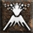
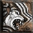

Raven 86.11% (31.0)
 Volcano 0.0% (0.0)
 Fury 0.0% (0.0)
Popular builds include:
40% of all Druids favor Shapeshifting
30% of all Druids favor Summons
30% of all Druids favor Elemental Skills
More detailed breakdown:
17.91% of Druid's invest heavily in Werebear, Maul, Shock Wave, Lycanthropy, Oak Sage
13.43% of Druid's invest heavily in Summon Grizzly, Summon Dire Wolf, Summon Spirit Wolf, Heart of Wolverine, Oak Sage
11.44% of Druid's invest heavily in Summon Dire Wolf, Rabies, Poison Creeper, Lycanthropy, Oak Sage
8.46% of Druid's invest heavily in Hurricane, Flame Dash, Molten Boulder, Tornado, Twister
7.46% of Druid's invest heavily in Molten Boulder, Armageddon, Volcano, Fissure, Firestorm
5.97% of Druid's invest heavily in Flame Dash, Molten Boulder, Firestorm, Armageddon, Fissure
5.97% of Druid's invest heavily in Poison Creeper, Summon Dire Wolf, Rabies, Lycanthropy, Feral Rage
5.97% of Druid's invest heavily in Twister, Cyclone Armor, Tornado, Hurricane, Arctic Blast
5.47% of Druid's invest heavily in Heart of Wolverine, Lycanthropy, Fury, Oak Sage, Werewolf
4.98% of Druid's invest heavily in Oak Sage, Heart of Wolverine, Summon Grizzly, Maul, Summon Dire Wolf
3.98% of Druid's invest heavily in Maul, Lycanthropy, Shock Wave, Summon Dire Wolf, Summon Grizzly
3.98% of Druid's invest heavily in Summon Dire Wolf, Summon Grizzly, Rabies, Poison Creeper, Oak Sage
2.99% of Druid's invest heavily in Molten Boulder, Flame Dash, Oak Sage, Heart of Wolverine, Armageddon
1.99% of Druid's invest heavily in Poison Creeper, Rabies, Summon Dire Wolf, Werewolf, Lycanthropy
Skills: Heart of Wolverine:20, Lycanthropy:20, Werebear:20, Maul:20, Summon Grizzly:18, Summon Dire Wolf:2, Raven:1, Summon Spirit Wolf:1, Werewolf:1
Equipment:
Amulet: Metalgrid, ring: Carrion Wind, ring: Skull Eye, Helmet: Metamorphosis, Boots: Aldur's Advance, Gloves: Immortal King's Forge, Belt: Immortal King's Detail, Armor: Fortitude, Offhand: Bolts, Left hand: The Cranium Basher
Mercenary: Act 5 Barbarian - Crown of Thieves, Treachery, Lawbringer
Skills: Lycanthropy:20, Werebear:20, Maul:20, Shock Wave:20, Oak Sage:15, Summon Dire Wolf:3, Raven:1, Summon Spirit Wolf:1, Heart of Wolverine:1, Summon Grizzly:1, Werewolf:1
Equipment:
Gloves: Dracul's Grasp, Boots: Gore Rider, Amulet: Communal Amulet, Helmet: Jalal's Mane, Belt: Arachnid Mesh, ring: Eagle Coil, ring: Eagle Turn, Armor: Fortitude, Left hand: Mang Song's Lesson, Left hand: Headstriker, Offhand: Stormshield
Mercenary: Act 2 Desert Mercenary - The Reaper's Toll
Skills: Lycanthropy:20, Werebear:20, Maul:20, Shock Wave:20, Oak Sage:9, Heart of Wolverine:3, Summon Dire Wolf:3, Raven:1, Summon Spirit Wolf:1, Spirit of Barbs:1, Summon Grizzly:1, Werewolf:1, Arctic Blast:1, Cyclone Armor:1
Equipment:
Helmet: Jalal's Mane, Boots: Gore Rider, Amulet: Communal Amulet of Strength, Belt: Arachnid Mesh, Armor: Fortitude, ring: Manald Heal, ring: Rune Grasp, Left hand: Lawbringer, Left hand: Headstriker, Offhand: Stormshield, Offhand: Spirit, Gloves: Laying of Hands
Mercenary: Act 2 Desert Mercenary - Fortitude, Andariel's Visage, Tomb Reaver
Skills: Lycanthropy:20, Werebear:20, Maul:20, Shock Wave:20, Heart of Wolverine:14, Raven:1, Oak Sage:1, Summon Spirit Wolf:1, Summon Dire Wolf:1, Summon Grizzly:1, Werewolf:1, Arctic Blast:1, Cyclone Armor:1
Equipment:
Helmet: Jalal's Mane, Amulet: Communal Amulet of the Wraith, Gloves: Dracul's Grasp, ring: Bul-Kathos' Wedding Band x2, Belt: Arachnid Mesh, Boots: Gore Rider, Armor: Fortitude, Left hand: Mang Song's Lesson, Left hand: Headstriker, Offhand: Spirit
Mercenary: Act 2 Desert Mercenary - No equipment
Skills: Maul:20, Shock Wave:20, Oak Sage:16, Werebear:13, Heart of Wolverine:10, Summon Spirit Wolf:7, Lycanthropy:7, Summon Dire Wolf:3, Raven:1, Poison Creeper:1, Carrion Vine:1, Solar Creeper:1, Summon Grizzly:1, Werewolf:1
Equipment:
Armor: Fortitude, Helmet: Jalal's Mane, Amulet: Skull Beads, Gloves: Soul Drainer, Boots: Storm Tread, Belt: String of Ears, ring: Storm Coil, ring: Raven Frost, Left hand: Spirit, Left hand: Buriza-Do Kyanon, Offhand: Spirit, Offhand: Eagle Eye
Mercenary: Act 5 Barbarian - The Gladiator's Bane, Arreat's Face, The Grandfather
Skills: Lycanthropy:20, Werebear:20, Maul:20, Shock Wave:20, Summon Grizzly:15, Raven:1, Oak Sage:1, Summon Spirit Wolf:1, Heart of Wolverine:1, Summon Dire Wolf:1, Werewolf:1
Equipment:
Boots: Gore Rider, Belt: Arachnid Mesh, Amulet: Highlord's Wrath, Gloves: Dracul's Grasp, Helmet: Jalal's Mane, ring: Raven Knot, ring: Bitter Loop, Armor: Fortitude, Left hand: Call to Arms, Left hand: Headstriker, Offhand: Spirit x2
Mercenary: Act 5 Barbarian - No equipment
Skills: Lycanthropy:20, Werebear:20, Maul:20, Shock Wave:20, Oak Sage:14, Heart of Wolverine:2, Raven:1, Summon Spirit Wolf:1, Summon Dire Wolf:1, Summon Grizzly:1, Werewolf:1
Equipment:
Gloves: Dracul's Grasp, Belt: String of Ears, Amulet: Grim Talisman, Helmet: Jalal's Mane, Left hand: Call to Arms, Left hand: Headstriker, Offhand: Spirit x2, Armor: Fortitude, Boots: Gore Rider
Mercenary: Act 5 Barbarian - Steel Shade, Treachery, Lawbringer
Skills: Lycanthropy:20, Werebear:20, Maul:20, Shock Wave:20, Heart of Wolverine:12, Raven:1, Oak Sage:1, Summon Spirit Wolf:1, Summon Dire Wolf:1, Summon Grizzly:1, Werewolf:1, Firestorm:1, Molten Boulder:1, Flame Dash:1
Equipment:
Helmet: Jalal's Mane, Gloves: Dracul's Grasp, Belt: Arachnid Mesh, ring: Raven Frost, ring: Rune Spiral, Amulet: Death Clasp, Boots: Gore Rider, Armor: Fortitude, Left hand: Mang Song's Lesson, Left hand: Headstriker, Offhand: Spirit
Mercenary: Act 1 Rogue Scout - No equipment
Skills: Lycanthropy:20, Werebear:20, Maul:20, Shock Wave:20, Heart of Wolverine:19, Oak Sage:1, Werewolf:1
Equipment:
Helmet: Jalal's Mane, ring: PlagueRI Whorl, ring: Nature's Peace, Boots: Gore Rider, Armor: Skin of the Vipermagi, Belt: String of Ears, Gloves: Dracul's Grasp, Left hand: Mang Song's Lesson, Left hand: Ume's Lament, Amulet: Highlord's Wrath, Offhand: Stormshield
Mercenary: Act 2 Desert Mercenary - Hustle, Jeweler's Diadem of Speed, Insight
Skills: Lycanthropy:20, Werebear:20, Maul:20, Shock Wave:20, Summon Dire Wolf:14, Raven:1, Oak Sage:1, Summon Spirit Wolf:1, Heart of Wolverine:1, Summon Grizzly:1, Werewolf:1
Equipment:
Helmet: Jalal's Mane, Boots: Gore Rider, Armor: Fortitude, Amulet: Mara's Kaleidoscope, ring: Order Band, ring: Manald Heal, Gloves: Dracul's Grasp, Belt: Arachnid Mesh, Left hand: Islestrike, Left hand: Headstriker, Offhand: Spirit x2
Mercenary: Act 1 Rogue Scout - Fortitude, Harlequin Crest, Buriza-Do Kyanon
Skills: Lycanthropy:20, Werebear:20, Maul:20, Shock Wave:20, Oak Sage:15, Raven:1, Summon Spirit Wolf:1, Heart of Wolverine:1, Summon Dire Wolf:1, Summon Grizzly:1, Werewolf:1
Equipment:
Belt: Arachnid Mesh, Boots: Gore Rider, Gloves: Dracul's Grasp, Helmet: Jalal's Mane, ring: GhoulRI Band, ring: Stone Band, Amulet: Communal Amulet of the Vampire, Armor: Fortitude, Left hand: Mang Song's Lesson, Left hand: Headstriker, Offhand: Stormshield
Mercenary: Act 1 Rogue Scout - Vampire Gaze, Treachery, Harmony
Skills: Lycanthropy:20, Werebear:20, Maul:20, Shock Wave:20, Summon Dire Wolf:13, Summon Spirit Wolf:3, Raven:1, Oak Sage:1, Heart of Wolverine:1, Summon Grizzly:1, Werewolf:1
Equipment:
ring: Death Coil, ring: Blood Hold, Helmet: Metamorphosis, Amulet: Communal Amulet, Belt: Arachnid Mesh, Boots: Aldur's Advance, Left hand: Fleshrender, Left hand: Headstriker, Offhand: Spirit x2, Armor: Fortitude, Gloves: Ghoulhide
Mercenary: Act 5 Barbarian - Vampire Gaze, Treachery, Lawbringer
Skills: Lycanthropy:20, Werebear:20, Maul:20, Shock Wave:20, Summon Dire Wolf:15, Raven:1, Oak Sage:1, Summon Spirit Wolf:1, Heart of Wolverine:1, Summon Grizzly:1, Werewolf:1
Equipment:
Amulet: Viper Emblem, Helmet: Metamorphosis, ring: Skull Band, ring: Raven Finger, Boots: Aldur's Advance, Belt: String of Ears, Left hand: Harmony, Left hand: Headstriker, Gloves: Ghoulhide, Armor: Fortitude, Offhand: Spirit
Mercenary: Act 5 Barbarian - Leviathan, Tal Rasha's Horadric Crest, Lawbringer
Skills: Lycanthropy:20, Werebear:20, Maul:20, Shock Wave:20, Summon Dire Wolf:14, Raven:1, Oak Sage:1, Summon Spirit Wolf:1, Heart of Wolverine:1, Summon Grizzly:1, Werewolf:1
Equipment:
Helmet: Metamorphosis, Amulet: GhoulRI Mark, Gloves: Trang-Oul's Claws, Armor: Fortitude, Belt: Arachnid Mesh, Left hand: Headstriker, Offhand: Spirit x2
Mercenary: Act 5 Barbarian - Natalya's Totem, Treachery, Lawbringer
Skills: Lycanthropy:20, Werebear:20, Maul:20, Shock Wave:20, Summon Dire Wolf:14, Raven:1, Oak Sage:1, Summon Spirit Wolf:1, Heart of Wolverine:1, Summon Grizzly:1, Werewolf:1
Equipment:
Belt: Arachnid Mesh, Boots: Gore Rider, ring: PlagueRI Hold, ring: Raven Frost, Armor: Fortitude, Gloves: Dracul's Grasp, Amulet: Grim Emblem, Helmet: Jalal's Mane, Left hand: Spirit, Left hand: Headstriker, Offhand: Spirit, Offhand: Stormshield
Mercenary: Act 2 Desert Mercenary - No equipment
Skills: Lycanthropy:20, Werebear:20, Maul:20, Shock Wave:20, Heart of Wolverine:13, Raven:1, Oak Sage:1, Summon Spirit Wolf:1, Summon Dire Wolf:1, Summon Grizzly:1, Werewolf:1
Equipment:
Helmet: Jalal's Mane, Gloves: Dracul's Grasp, Armor: Fortitude, ring: Storm Gyre, ring: Wisp Projector, Amulet: Highlord's Wrath, Belt: Trang-Oul's Girth, Boots: Gore Rider, Offhand: Spirit x2, Left hand: Fleshripper
Mercenary: Act 1 Rogue Scout - Treachery, Tal Rasha's Horadric Crest, Harmony
Skills: Lycanthropy:20, Werebear:20, Maul:20, Shock Wave:20, Oak Sage:8, Heart of Wolverine:5, Raven:1, Summon Spirit Wolf:1, Summon Dire Wolf:1, Summon Grizzly:1, Werewolf:1
Equipment:
ring: Stone Whorl, ring: Beast Touch, Helmet: Jalal's Mane, Armor: Fortitude, Amulet: Communal Amulet of the Colossus, Gloves: Laying of Hands, Boots: Gore Rider, Belt: Arachnid Mesh, Left hand: Headstriker, Left hand: Harmony, Offhand: Spirit
Mercenary: Act 2 Desert Mercenary - Tal Rasha's Horadric Crest, Shaftstop, The Reaper's Toll
Skills: Lycanthropy:20, Werebear:20, Maul:20, Shock Wave:20, Oak Sage:15, Heart of Wolverine:1, Werewolf:1
Equipment:
Left hand: Fleshrender, Offhand: Spirit, Boots: Viper Slippers, Gloves: Kenshi's Chain Gloves of Alacrity, Amulet: Highlord's Wrath, ring: Carrion Wind, Armor: Rain
Mercenary: Act 1 Rogue Scout - No equipment
Skills: Lycanthropy:20, Werebear:20, Maul:20, Shock Wave:20, Oak Sage:10, Heart of Wolverine:8, Werewolf:1
Equipment:
Belt: Bone Winding, Gloves: Trang-Oul's Claws, ring: Doom Eye, Amulet: Blood Heart, Armor: Que-Hegan's Wisdom, Helmet: Jalal's Mane, Left hand: Headstriker, Offhand: Spirit
Mercenary: Act 5 Barbarian - No equipment
Skills: Lycanthropy:20, Werebear:20, Maul:20, Shock Wave:20, Oak Sage:10, Raven:1, Poison Creeper:1, Summon Spirit Wolf:1, Heart of Wolverine:1, Summon Dire Wolf:1, Summon Grizzly:1, Werewolf:1, Arctic Blast:1, Cyclone Armor:1
Equipment:
ring: Manald Heal, ring: Entropy Spiral, Gloves: Trang-Oul's Claws, Amulet: Seraph's Hymn, Helmet: Jalal's Mane, Boots: Gore Rider, Belt: Credendum, Left hand: Fleshrender, Left hand: Headstriker, Offhand: Lidless Wall, Offhand: Spirit
Mercenary: Act 3 Eastern Sorceror - Stealth, Tal Rasha's Horadric Crest, Azurewrath, Rhyme
Skills: Lycanthropy:20, Werebear:20, Maul:20, Shock Wave:20, Oak Sage:12, Raven:1, Summon Spirit Wolf:1, Heart of Wolverine:1, Summon Dire Wolf:1, Summon Grizzly:1, Werewolf:1
Equipment:
Offhand: Spirit
Mercenary: Act 1 Rogue Scout - No equipment
Skills: Lycanthropy:20, Werebear:20, Maul:20, Shock Wave:20, Oak Sage:9, Raven:1, Poison Creeper:1, Summon Spirit Wolf:1, Carrion Vine:1, Heart of Wolverine:1, Summon Dire Wolf:1, Solar Creeper:1, Spirit of Barbs:1, Summon Grizzly:1, Werewolf:1
Equipment:
Armor: Fortitude, Boots: Gore Rider, ring: Dread Finger, ring: Raven Frost, Gloves: Laying of Hands, Amulet: Skull Heart, Belt: String of Ears, Left hand: Harmony, Left hand: Headstriker, Helmet: Jalal's Mane, Offhand: Stormshield
Mercenary: Act 2 Desert Mercenary - No equipment
Skills: Heart of Wolverine:20, Werebear:20, Maul:20, Shock Wave:20, Lycanthropy:11, Raven:1, Oak Sage:1, Summon Spirit Wolf:1, Summon Dire Wolf:1, Spirit of Barbs:1, Summon Grizzly:1, Werewolf:1
Equipment:
ring: GhoulRI Whorl, ring: PlagueRI Eye, Helmet: Jalal's Mane, Boots: Aldur's Advance, Belt: Goldwrap, Amulet: Communal Amulet, Gloves: Magefist, Left hand: Jade Battle Staff of Teleportation, Left hand: Headstriker, Armor: Duriel's Shell, Offhand: Spirit
Mercenary: Act 5 Barbarian - Mesh Armor, Tal Rasha's Horadric Crest, Lawbringer
Skills: Lycanthropy:20, Werebear:20, Maul:20, Shock Wave:20, Oak Sage:12, Raven:1, Summon Spirit Wolf:1, Heart of Wolverine:1, Summon Dire Wolf:1, Summon Grizzly:1, Werewolf:1
Equipment:
ring: GhoulRI Grip, ring: Rune Band, Boots: Gore Rider, Belt: String of Ears, Helmet: Jalal's Mane, Armor: Fortitude, Gloves: Dracul's Grasp, Left hand: Holy Thunder, Left hand: Headstriker, Amulet: Communal Amulet of the Whale, Offhand: Spirit
Mercenary: Act 1 Rogue Scout - No equipment
Skills: Lycanthropy:20, Werebear:20, Shock Wave:20, Maul:11, Oak Sage:7, Heart of Wolverine:5, Raven:1, Poison Creeper:1, Summon Spirit Wolf:1, Carrion Vine:1, Summon Dire Wolf:1, Solar Creeper:1, Spirit of Barbs:1, Summon Grizzly:1, Werewolf:1, Feral Rage:1, Fire Claws:1
Equipment:
Gloves: Storm Hold, Boots: Tearhaunch, Helmet: Giant Skull, Belt: Credendum, Amulet: The Cat's Eye, Armor: Smoke, ring: Storm Gyre, ring: Wraithra Gyre, Left hand: Demon Limb, Offhand: Spirit
Mercenary: Act 1 Rogue Scout - No equipment
Skills: Lycanthropy:20, Werebear:20, Maul:20, Shock Wave:20, Summon Dire Wolf:10, Oak Sage:2, Raven:1, Summon Spirit Wolf:1, Heart of Wolverine:1, Summon Grizzly:1, Werewolf:1
Equipment:
Gloves: Dracul's Grasp, Amulet: GhoulRI Emblem, Helmet: Jalal's Mane, ring: Bul-Kathos' Wedding Band, ring: Raven Frost, Belt: Arachnid Mesh, Armor: Fortitude, Boots: Gore Rider, Left hand: Headstriker, Offhand: Spirit
Mercenary: Act 1 Rogue Scout - Twitchthroe, Tal Rasha's Horadric Crest, Harmony
Skills: Lycanthropy:20, Werebear:20, Maul:20, Shock Wave:20, Oak Sage:3, Raven:1, Summon Spirit Wolf:1, Heart of Wolverine:1, Summon Dire Wolf:1, Summon Grizzly:1, Werewolf:1
Equipment:
Gloves: Dracul's Grasp, Boots: Gore Rider, Helmet: Jalal's Mane, ring: Wisp Projector, ring: Raven Gyre, Belt: Thundergod's Vigor, Armor: Guardian Angel, Amulet: Communal Amulet of Absorption, Left hand: Heart of the Oak, Left hand: Headstriker, Offhand: Spirit x2
Mercenary: Act 5 Barbarian - Treachery, Tal Rasha's Horadric Crest, Lawbringer
Skills: Lycanthropy:20, Werebear:20, Maul:20, Shock Wave:20, Oak Sage:11, Raven:1, Summon Spirit Wolf:1, Heart of Wolverine:1, Summon Dire Wolf:1, Summon Grizzly:1, Werewolf:1
Equipment:
Amulet: Rune Necklace, Helmet: Metamorphosis, ring: Beast Spiral, ring: Bone Finger, Belt: Arachnid Mesh, Gloves: Steelrend, Boots: Aldur's Advance, Armor: Fortitude, Left hand: Mang Song's Lesson, Left hand: Headstriker, Offhand: Stormshield
Mercenary: Act 5 Barbarian - Vampire Gaze, Fortitude, Lawbringer
Skills: Lycanthropy:20, Werebear:20, Maul:20, Shock Wave:20, Oak Sage:11, Raven:1, Summon Spirit Wolf:1, Heart of Wolverine:1, Summon Dire Wolf:1, Summon Grizzly:1, Werewolf:1
Equipment:
ring: Stone Turn, ring: Viper Touch, Boots: Gore Rider, Gloves: Dracul's Grasp, Belt: Arachnid Mesh, Amulet: Corruption Wing, Helmet: Jalal's Mane, Armor: Fortitude, Left hand: Spirit, Left hand: Headstriker, Offhand: Spirit, Offhand: Stormshield
Mercenary: Act 1 Rogue Scout - No equipment
Skills: Lycanthropy:20, Werebear:20, Maul:20, Shock Wave:20, Summon Grizzly:6, Summon Dire Wolf:5, Raven:1, Oak Sage:1, Summon Spirit Wolf:1, Heart of Wolverine:1, Werewolf:1
Equipment:
Armor: Fortitude, Helmet: Jalal's Mane, Boots: Gore Rider, Gloves: Laying of Hands, Amulet: Communal Amulet, ring: Raven Frost, Belt: String of Ears, Left hand: Fleshrender, Offhand: Spirit
Mercenary: Act 2 Desert Mercenary - No equipment
Skills: Lycanthropy:20, Werebear:20, Maul:20, Shock Wave:20, Raven:1, Summon Spirit Wolf:1, Heart of Wolverine:1, Summon Dire Wolf:1, Summon Grizzly:1, Werewolf:1
Equipment:
Boots: Gore Rider, Helmet: Jalal's Mane, ring: Chaos Whorl, ring: Dread Circle, Belt: Arachnid Mesh, Gloves: Laying of Hands, Amulet: Mara's Kaleidoscope, Armor: Fortitude, Left hand: Battle Staff of Teleportation, Left hand: Fleshrender, Offhand: Spirit
Mercenary: Act 2 Desert Mercenary - The Gladiator's Bane, Vampire Gaze, The Reaper's Toll
Skills: Lycanthropy:20, Werebear:20, Maul:20, Shock Wave:20, Oak Sage:14, Heart of Wolverine:1, Werewolf:1
Equipment:
Boots: Gore Rider, ring: Skull Touch, ring: Bul-Kathos' Wedding Band, Helmet: Jalal's Mane, Left hand: Heart of the Oak, Left hand: Headstriker, Offhand: Spirit x2, Armor: Fortitude, Gloves: Dracul's Grasp, Amulet: Rune Gorget, Belt: Arachnid Mesh
Mercenary: Act 1 Rogue Scout - No equipment
Skills: Lycanthropy:20, Werebear:20, Maul:20, Shock Wave:20, Heart of Wolverine:14, Werewolf:1
Equipment:
ring: Eagle Finger, ring: Eagle Band, Helmet: Metamorphosis, Gloves: Laying of Hands, Amulet: Communal Amulet of Life Everlasting, Armor: Fortitude, Boots: Aldur's Advance, Left hand: Headstriker, Offhand: Spirit
Mercenary: Act 2 Desert Mercenary - No equipment
Skills: Lycanthropy:20, Werebear:20, Maul:20, Shock Wave:20, Summon Dire Wolf:9, Raven:1, Oak Sage:1, Summon Spirit Wolf:1, Heart of Wolverine:1, Summon Grizzly:1, Werewolf:1
Equipment:
ring: Grim Loop, ring: Eagle Band, Helmet: Metamorphosis, Armor: Fortitude, Gloves: Laying of Hands, Boots: Aldur's Advance, Amulet: Communal Amulet of Amelioration, Left hand: Harmony, Left hand: Headstriker, Belt: String of Ears, Offhand: Spirit
Mercenary: Act 5 Barbarian - Tal Rasha's Horadric Crest, Treachery, Lawbringer
Skills: Lycanthropy:20, Werebear:20, Maul:20, Shock Wave:20, Heart of Wolverine:8, Raven:1, Oak Sage:1, Summon Spirit Wolf:1, Summon Dire Wolf:1, Summon Grizzly:1, Werewolf:1
Equipment:
Helmet: Jalal's Mane, Belt: Eagle Fringe, Boots: Gore Rider, Amulet: Communal Amulet of the Apprentice, ring: Chaos Eye, ring: Carrion Wind, Left hand: Fleshrender, Left hand: Headstriker, Offhand: Spirit x2, Armor: Fortitude, Gloves: Trang-Oul's Claws
Mercenary: Act 2 Desert Mercenary - Treachery, Vampire Gaze, The Reaper's Toll
Skills: Lycanthropy:20, Werebear:20, Maul:20, Shock Wave:20, Oak Sage:7, Summon Grizzly:2, Raven:1, Summon Spirit Wolf:1, Heart of Wolverine:1, Summon Dire Wolf:1, Werewolf:1
Equipment:
Boots: Gore Rider, Helmet: Jalal's Mane, Belt: Arachnid Mesh, ring: Corruption Master, ring: Havoc Touch, Left hand: Spirit, Left hand: Headstriker, Offhand: Spirit, Offhand: Stormshield, Armor: Fortitude, Gloves: Laying of Hands, Amulet: Atma's Scarab
Mercenary: Act 2 Desert Mercenary - No equipment
Skills: Oak Sage:20, Heart of Wolverine:20, Summon Dire Wolf:20, Summon Grizzly:20, Summon Spirit Wolf:19, Spirit of Barbs:3, Raven:1, Poison Creeper:1, Carrion Vine:1, Werewolf:1, Lycanthropy:1, Werebear:1
Equipment:
Armor: Rain, Boots: War Traveler, Belt: Arachnid Mesh, ring: Raven Frost, ring: The Stone of Jordan, Gloves: Chance Guards, Amulet: Mara's Kaleidoscope, Helmet: Harlequin Crest, Left hand: Heart of the Oak, Left hand: Beast, Offhand: Spirit x2
Mercenary: Act 5 Barbarian - Tal Rasha's Horadric Crest, Fortitude, Lawbringer
Skills: Summon Spirit Wolf:20, Heart of Wolverine:20, Summon Dire Wolf:20, Summon Grizzly:20, Oak Sage:17, Raven:1, Poison Creeper:1, Spirit of Barbs:1, Firestorm:1, Molten Boulder:1, Arctic Blast:1, Cyclone Armor:1, Flame Dash:1
Equipment:
Armor: Rain, Helmet: Jalal's Mane, Amulet: Keeper's Amulet of Absorption, Gloves: Eagle Finger, Boots: Aldur's Advance, Left hand: Call to Arms, Offhand: Spirit x2
Mercenary: Act 5 Barbarian - Lawbringer
Skills: Poison Creeper:20, Summon Dire Wolf:20, Summon Grizzly:20, Flame Dash:20, Summon Spirit Wolf:14, Raven:1, Oak Sage:1, Carrion Vine:1, Heart of Wolverine:1, Solar Creeper:1, Spirit of Barbs:1, Firestorm:1, Molten Boulder:1
Equipment:
ring: Nagelring x2, Amulet: Keeper's Amulet of Negation, Armor: Rain, Gloves: Corpse Grasp, Belt: Goldwrap, Boots: Aldur's Advance, Helmet: Jalal's Mane, Left hand: Demon Limb, Left hand: Heart of the Oak, Offhand: Medusa's Gaze, Offhand: Spirit
Mercenary: Act 2 Desert Mercenary - Treachery, Steel Shade, The Reaper's Toll
Skills: Summon Spirit Wolf:20, Heart of Wolverine:20, Summon Dire Wolf:20, Summon Grizzly:20, Maul:10, Flame Dash:8, Raven:1, Werebear:1, Firestorm:1, Molten Boulder:1
Equipment:
Amulet: Keeper's Amulet of Protection, Armor: Rain, Boots: War Traveler, Belt: Arachnid Mesh, Helmet: 2693, ring: Bul-Kathos' Wedding Band, ring: Nagelring, Gloves: Storm Grasp, Left hand: Widowmaker, Left hand: Heart of the Oak, Offhand: Moonfire, Offhand: Spirit
Mercenary: Act 1 Rogue Scout - Hearth, Naj's Light Plate, Edge
Skills: Poison Creeper:20, Summon Spirit Wolf:20, Heart of Wolverine:20, Summon Dire Wolf:20, Summon Grizzly:20, Raven:1, Oak Sage:1
Equipment:
ring: Shadow Gyre, ring: Carrion Wind, Helmet: Jalal's Mane, Armor: Rain, Boots: War Traveler, Amulet: Keeper's Amulet of Control, Belt: Bitter Fringe, Gloves: Trang-Oul's Claws, Left hand: Spirit, Offhand: Spirit
Mercenary: Act 5 Barbarian - Naj's Circlet, Naj's Light Plate, Lawbringer
Skills: Summon Spirit Wolf:20, Heart of Wolverine:20, Summon Dire Wolf:20, Summon Grizzly:20, Oak Sage:18, Raven:1, Poison Creeper:1, Werewolf:1, Lycanthropy:1
Equipment:
Belt: Doom Winding, Armor: Rain, Amulet: Keeper's Amulet, Gloves: Bone Clutches, ring: The Stone of Jordan, ring: Beast Circle, Boots: Aldur's Advance, Helmet: Jalal's Mane, Left hand: Heart of the Oak, Offhand: Spirit
Mercenary: Act 5 Barbarian - Undead Crown, Skin of the Flayed One, Lawbringer
Skills: Poison Creeper:20, Summon Spirit Wolf:20, Heart of Wolverine:20, Summon Dire Wolf:20, Summon Grizzly:20, Raven:1, Arctic Blast:1
Equipment:
ring: Nagelring, Amulet: Keeper's Amulet, Gloves: Chance Guards, Armor: Enigma, Belt: Goldwrap, Left hand: Harmony, Left hand: Plague
Mercenary: Act 1 Rogue Scout - Buriza-Do Kyanon
Skills: Heart of Wolverine:20, Summon Dire Wolf:20, Summon Grizzly:20, Flame Dash:20, Summon Spirit Wolf:14, Raven:1, Poison Creeper:1, Oak Sage:1, Carrion Vine:1, Solar Creeper:1, Spirit of Barbs:1, Firestorm:1, Molten Boulder:1
Equipment:
Armor: Rain, Helmet: Metamorphosis, Boots: Aldur's Advance, Gloves: Laying of Hands, Belt: Arachnid Mesh, ring: Bul-Kathos' Wedding Band, ring: Wisp Projector, Amulet: Havoc Noose, Left hand: Heart of the Oak, Left hand: Silence, Offhand: Spirit, Offhand: Stormshield
Mercenary: Act 5 Barbarian - Duriel's Shell, Rockstopper, Lawbringer
Skills: Poison Creeper:20, Summon Spirit Wolf:20, Summon Dire Wolf:20, Summon Grizzly:20, Heart of Wolverine:11, Oak Sage:4, Raven:1, Carrion Vine:1, Spirit of Barbs:1, Firestorm:1, Molten Boulder:1, Flame Dash:1
Equipment:
Belt: Gale Harness, ring: Nagelring, ring: Viper Turn, Amulet: Rainbow Amulet of Leadership, Helmet: Hierophant's Falcon Mask of the Fox, Boots: Ruby Heavy Boots of Luck, Armor: Rain, Gloves: Storm Fist, Left hand: Long Staff of Teleportation, Left hand: Heart of the Oak, Offhand: Spirit
Mercenary: Act 1 Rogue Scout - Crown of Thieves, Tal Rasha's Guardianship, Buriza-Do Kyanon
Skills: Summon Spirit Wolf:20, Heart of Wolverine:20, Summon Dire Wolf:20, Summon Grizzly:20, Poison Creeper:16, Oak Sage:3, Raven:1, Carrion Vine:1
Equipment:
Belt: Immortal King's Detail, ring: Ocher Ring of Fortune, ring: Doom Master, Boots: Storm Shank, Gloves: Chance Guards, Amulet: Keeper's Amulet of Fortune, Helmet: Jalal's Mane, Left hand: Buriza-Do Kyanon, Left hand: Spirit, Offhand: Dragonbreath, Offhand: Spirit, Armor: Rain
Mercenary: Act 5 Barbarian - Tal Rasha's Horadric Crest, Leviathan, Lawbringer
Skills: Oak Sage:20, Heart of Wolverine:20, Summon Dire Wolf:20, Summon Grizzly:20, Summon Spirit Wolf:12, Raven:1, Spirit of Barbs:1, Werewolf:1, Lycanthropy:1, Feral Rage:1, Rabies:1, Fury:1
Equipment:
Helmet: Jalal's Mane, Boots: Aldur's Advance, Belt: String of Ears, ring: Raven Frost, ring: Wraithra Hold, Amulet: Atma's Scarab, Gloves: Steelrend, Armor: Hustle, Left hand: Spirit, Left hand: The Cranium Basher, Offhand: Spirit
Mercenary: Act 1 Rogue Scout - Tal Rasha's Horadric Crest, Guardian Angel, Harmony
Skills: Poison Creeper:20, Summon Dire Wolf:20, Summon Grizzly:20, Maul:20, Summon Spirit Wolf:12, Raven:1, Oak Sage:1, Carrion Vine:1, Heart of Wolverine:1, Werebear:1, Firestorm:1, Molten Boulder:1, Flame Dash:1
Equipment:
Belt: Immortal King's Detail, Helmet: Jalal's Mane, Armor: Rain, Amulet: Keeper's Amulet, ring: Beast Eye, ring: Shadow Coil, Gloves: Immortal King's Forge, Boots: Sandstorm Trek, Left hand: Spirit, Offhand: Spirit
Mercenary: Act 5 Barbarian - No equipment
Skills: Heart of Wolverine:20, Summon Dire Wolf:20, Summon Grizzly:20, Flame Dash:20, Summon Spirit Wolf:7, Oak Sage:5, Raven:1, Spirit of Barbs:1, Werebear:1, Maul:1, Firestorm:1, Molten Boulder:1
Equipment:
Amulet: Eagle Eye, Gloves: Magefist, Armor: Rain, Belt: Credendum, Helmet: Jalal's Mane, ring: Storm Loop, ring: Havoc Hold, Boots: Silkweave, Left hand: Naj's Puzzler, Left hand: Spirit, Offhand: Spirit
Mercenary: Act 2 Desert Mercenary - Duriel's Shell, Tal Rasha's Horadric Crest, Pride
Skills: Summon Spirit Wolf:20, Summon Dire Wolf:20, Summon Grizzly:20, Flame Dash:16, Poison Creeper:9, Heart of Wolverine:4, Raven:1, Oak Sage:1, Carrion Vine:1, Solar Creeper:1, Spirit of Barbs:1, Firestorm:1, Molten Boulder:1, Arctic Blast:1, Cyclone Armor:1
Equipment:
Gloves: Havoc Grasp, Boots: Doom Track, Belt: Verdungo's Hearty Cord, Armor: Rain, ring: Stone Loop, ring: Rainbow Ring of the Apprentice, Helmet: Jalal's Mane, Amulet: Keeper's Amulet, Left hand: Spirit, Offhand: Spirit
Mercenary: Act 1 Rogue Scout - Natalya's Totem, Trang-Oul's Scales, Harmony
Skills: Summon Spirit Wolf:20, Summon Dire Wolf:20, Summon Grizzly:20, Flame Dash:20, Oak Sage:6, Raven:2, Poison Creeper:1, Carrion Vine:1, Heart of Wolverine:1, Spirit of Barbs:1, Werebear:1, Maul:1, Firestorm:1, Molten Boulder:1, Arctic Blast:1, Cyclone Armor:1
Equipment:
Armor: Rain, Boots: Corpse Nails, Amulet: Keeper's Amulet of Leadership, Helmet: Storm Brow, Gloves: Demon Clutches, ring: Wisp Projector, ring: Nagelring, Left hand: Mang Song's Lesson, Left hand: Spirit, Belt: Goldwrap, Offhand: Rhyme
Mercenary: Act 2 Desert Mercenary - Guillaume's Face, Natalya's Shadow, Steel Pillar
Skills: Summon Spirit Wolf:20, Summon Dire Wolf:20, Summon Grizzly:20, Heart of Wolverine:15, Oak Sage:13, Poison Creeper:6, Raven:1, Firestorm:1, Molten Boulder:1, Flame Dash:1
Equipment:
ring: Skull Band, ring: Havoc Knot, Boots: Havoc Nails, Armor: Rain, Belt: Nightsmoke, Gloves: Grim Clutches, Helmet: Jalal's Mane, Amulet: Keeper's Amulet, Left hand: Battle Staff of Teleportation, Left hand: Spirit, Offhand: Spirit
Mercenary: Act 3 Eastern Sorceror - Rockstopper, Skin of the Vipermagi, Bul-Kathos' Tribal Guardian, Doom Shell
Skills: Oak Sage:20, Summon Spirit Wolf:20, Summon Dire Wolf:20, Summon Grizzly:20, Flame Dash:7, Heart of Wolverine:3, Raven:1, Poison Creeper:1, Carrion Vine:1, Spirit of Barbs:1, Firestorm:1, Molten Boulder:1, Arctic Blast:1, Cyclone Armor:1
Equipment:
ring: Shadow Master, ring: Blood Whorl, Gloves: Doom Claw, Armor: Rain, Helmet: Storm Casque, Belt: Credendum, Amulet: PlagueRI Scarab, Boots: Spirit Stalker, Left hand: Spirit, Offhand: Spirit
Mercenary: Act 3 Eastern Sorceror - Goldskin, Guillaume's Face, Ancients' Pledge
Skills: Summon Spirit Wolf:20, Heart of Wolverine:20, Summon Dire Wolf:20, Summon Grizzly:20, Oak Sage:9, Raven:1, Poison Creeper:1, Werewolf:1, Lycanthropy:1, Werebear:1, Maul:1, Firestorm:1, Molten Boulder:1, Flame Dash:1
Equipment:
Armor: Rain, Gloves: Laying of Hands, Amulet: Order Mark, Helmet: Jalal's Mane, Boots: Aldur's Advance, Belt: String of Ears, Offhand: Spirit
Mercenary: Act 5 Barbarian - Treachery, Lawbringer
Skills: Summon Spirit Wolf:20, Summon Dire Wolf:20, Summon Grizzly:20, Flame Dash:20, Heart of Wolverine:6, Raven:1, Oak Sage:1, Firestorm:1, Molten Boulder:1, Arctic Blast:1, Fissure:1, Cyclone Armor:1, Twister:1, Volcano:1, Tornado:1, Armageddon:1, Hurricane:1
Equipment:
Gloves: Bloodfist, Helmet: Jalal's Mane, Armor: Skin of the Vipermagi, Boots: Sandstorm Trek, Amulet: Raven Wing, ring: Shadow Circle, ring: Blood Master, Belt: Verdungo's Hearty Cord, Offhand: Spirit
Mercenary: Act 2 Desert Mercenary - Steel Shade
Skills: Summon Dire Wolf:20, Summon Grizzly:20, Flame Dash:18, Summon Spirit Wolf:10, Maul:10, Heart of Wolverine:5, Raven:1, Oak Sage:1, Spirit of Barbs:1, Werebear:1, Firestorm:1, Molten Boulder:1
Equipment:
ring: Garnet Ring, ring: Bul-Kathos' Wedding Band, Amulet: Keeper's Amulet, Belt: Glyph Harness, Gloves: Hailstone Hand, Helmet: Stone Circlet, Boots: War Traveler, Left hand: Gull, Offhand: Milabrega's Orb
Mercenary: Act 5 Barbarian - Lawbringer
Skills: Summon Spirit Wolf:20, Heart of Wolverine:20, Summon Dire Wolf:20, Summon Grizzly:20, Oak Sage:12, Raven:1, Spirit of Barbs:1, Werewolf:1, Lycanthropy:1, Werebear:1
Equipment:
ring: Storm Gyre, ring: Raven Frost, Amulet: Beast Mark, Gloves: Dire Grasp, Armor: Stealth, Belt: Immortal King's Detail, Helmet: Peasant Crown, Boots: Sander's Riprap, Left hand: Spirit, Offhand: Spirit
Mercenary: Act 1 Rogue Scout - Duriel's Shell, Kira's Guardian, Goldstrike Arch
Skills: Oak Sage:20, Summon Spirit Wolf:20, Summon Grizzly:20, Hurricane:20, Heart of Wolverine:6, Summon Dire Wolf:3, Raven:1, Firestorm:1, Molten Boulder:1, Arctic Blast:1, Cyclone Armor:1, Twister:1, Tornado:1, Flame Dash:1
Equipment:
Belt: Goldwrap, ring: PlagueRI Finger, ring: Lapis Ring of Chance, Boots: Brimstone Nails, Armor: Smoke, Left hand: Blade of Ali Baba, Left hand: Spirit, Offhand: Rhyme, Offhand: Spirit, Amulet: Mara's Kaleidoscope, Gloves: Trang-Oul's Claws, Helmet: Imp Brow
Mercenary: Act 2 Desert Mercenary - Tal Rasha's Horadric Crest, Duriel's Shell, Insight
Skills: Summon Dire Wolf:20, Summon Grizzly:20, Summon Spirit Wolf:19, Heart of Wolverine:18, Poison Creeper:15, Raven:1, Werebear:1, Maul:1, Firestorm:1
Equipment:
Boots: Hsarus' Iron Heel, Amulet: Caretaker's Amulet, Gloves: Soul Hand, ring: Dread Spiral, ring: Bone Whorl, Helmet: Skull Horn, Belt: Hsarus' Iron Stay, Left hand: Angel's Gnarled Staff of Teleportation, Left hand: Dark Clan Crusher, Armor: Rain, Offhand: Spirit
Mercenary: Act 2 Desert Mercenary - Duskdeep, The Meat Scraper
Skills: Oak Sage:20, Summon Spirit Wolf:20, Summon Dire Wolf:20, Summon Grizzly:20, Heart of Wolverine:12, Raven:1, Poison Creeper:1, Carrion Vine:1, Solar Creeper:1
Equipment:
ring: Rune Master, ring: Shadow Coil, Belt: Skull Lock, Gloves: Chance Guards, Amulet: Caretaker's Amulet, Armor: Rain, Helmet: Jalal's Mane, Left hand: Battle Staff of Teleportation, Left hand: Spirit, Offhand: Spirit
Mercenary: Act 5 Barbarian - No equipment
Skills: Heart of Wolverine:20, Summon Dire Wolf:20, Summon Grizzly:20, Oak Sage:16, Summon Spirit Wolf:7, Flame Dash:7, Raven:1, Poison Creeper:1, Carrion Vine:1, Spirit of Barbs:1, Firestorm:1, Molten Boulder:1
Equipment:
Left hand: Plague Bearer, Left hand: Spirit, Offhand: Milabrega's Orb, Offhand: Spirit, Amulet: Mara's Kaleidoscope, Armor: Rain, Gloves: Gale Grip, Helmet: Raven Horn, Boots: Sandstorm Trek, ring: Viper Finger, ring: PlagueRI Touch, Belt: Hailstone Lock
Mercenary: Act 5 Barbarian - Stealskull, Dark Adherent, Oath
Skills: Summon Spirit Wolf:20, Summon Dire Wolf:20, Summon Grizzly:20, Flame Dash:11, Oak Sage:9, Heart of Wolverine:6, Raven:1, Werebear:1, Maul:1, Firestorm:1, Molten Boulder:1, Arctic Blast:1, Cyclone Armor:1, Twister:1, Tornado:1, Hurricane:1
Equipment:
Armor: Rain, Amulet: Wraithra Scarab, Gloves: Magefist, Boots: Aldur's Advance, ring: Stone Whorl, ring: Bul-Kathos' Wedding Band, Belt: Arachnid Mesh, Helmet: Corpse Visage, Left hand: Silence, Left hand: Heart of the Oak, Offhand: Phoenix, Offhand: Stormshield
Mercenary: Act 2 Desert Mercenary - Treachery, Steel Shade, The Reaper's Toll
Skills: Oak Sage:20, Summon Spirit Wolf:20, Summon Dire Wolf:20, Summon Grizzly:20, Flame Dash:9, Raven:1, Heart of Wolverine:1, Firestorm:1, Molten Boulder:1
Equipment:
ring: GhoulRI Spiral, ring: Viper Eye, Armor: Stealth, Amulet: Rune Gorget, Belt: Goldwrap, Helmet: Jalal's Mane, Gloves: Bramble Grip, Boots: Aldur's Advance, Left hand: Spirit, Offhand: Spirit
Mercenary: Act 5 Barbarian - Crow Caw, Crown of Thieves, Merciless Great Sword of the Lamprey
Skills: Poison Creeper:20, Oak Sage:20, Summon Dire Wolf:20, Rabies:20, Lycanthropy:10, Summon Spirit Wolf:7, Werewolf:2, Raven:1, Heart of Wolverine:1, Summon Grizzly:1, Feral Rage:1, Fury:1, Firestorm:1, Molten Boulder:1, Flame Dash:1
Equipment:
Belt: String of Ears, Gloves: Trang-Oul's Claws, ring: Wraithra Turn, ring: Death Band, Helmet: Metamorphosis, Armor: Arkaine's Valor, Amulet: Communal Amulet of the Squid, Boots: Aldur's Advance, Left hand: Spirit, Left hand: Stormshield, Offhand: Spirit, Offhand: Grief
Mercenary: Act 1 Rogue Scout - Tal Rasha's Horadric Crest, Hustle, Harmony
Skills: Poison Creeper:20, Oak Sage:20, Summon Dire Wolf:20, Lycanthropy:20, Rabies:20, Raven:1, Summon Spirit Wolf:1, Heart of Wolverine:1, Summon Grizzly:1, Werewolf:1, Feral Rage:1
Equipment:
Gloves: Trang-Oul's Claws, Belt: Nosferatu's Coil, Helmet: Metamorphosis, Amulet: Mara's Kaleidoscope, Boots: Storm Nails, ring: The Stone of Jordan, ring: Wisp Projector, Armor: Enigma, Left hand: Grief, Offhand: Stormshield
Mercenary: Act 1 Rogue Scout - Andariel's Visage, Fortitude, Harmony
Skills: Poison Creeper:20, Summon Dire Wolf:20, Lycanthropy:20, Rabies:20, Oak Sage:18, Raven:1, Summon Spirit Wolf:1, Heart of Wolverine:1, Summon Grizzly:1, Werewolf:1, Feral Rage:1
Equipment:
Amulet: Feral Amulet of the Ox, ring: Raven Frost, ring: Wisp Projector, Helmet: Metamorphosis, Gloves: Trang-Oul's Claws, Belt: String of Ears, Boots: Aldur's Advance, Left hand: Spirit, Left hand: Lightsabre, Offhand: Spirit, Offhand: Stormshield, Armor: Enigma
Mercenary: Act 1 Rogue Scout - Rockfleece, Harmony
Skills: Poison Creeper:20, Oak Sage:20, Summon Dire Wolf:20, Rabies:20, Lycanthropy:18, Raven:1, Summon Spirit Wolf:1, Heart of Wolverine:1, Summon Grizzly:1, Werewolf:1, Feral Rage:1, Fury:1
Equipment:
Helmet: Metamorphosis, ring: Wisp Projector, ring: Storm Finger, Amulet: Communal Amulet of Absorption, Gloves: Trang-Oul's Claws, Belt: String of Ears, Boots: Aldur's Advance, Armor: Naj's Light Plate, Left hand: Demon Limb, Left hand: Grief, Offhand: Spirit, Offhand: Stormshield
Mercenary: Act 1 Rogue Scout - Tal Rasha's Horadric Crest, Tal Rasha's Guardianship, Harmony
Skills: Poison Creeper:20, Summon Dire Wolf:20, Lycanthropy:20, Rabies:20, Oak Sage:18, Raven:1, Summon Spirit Wolf:1, Heart of Wolverine:1, Summon Grizzly:1, Werewolf:1, Feral Rage:1, Fury:1
Equipment:
Armor: Arkaine's Valor, Gloves: Trang-Oul's Claws, Boots: Aldur's Advance, ring: Bone Finger, ring: Wisp Projector, Amulet: Chaos Mark, Helmet: Metamorphosis, Belt: Goldwrap, Left hand: Edge, Left hand: Grief, Offhand: Spirit
Mercenary: Act 1 Rogue Scout - Treachery, Andariel's Visage, Harmony
Skills: Poison Creeper:20, Oak Sage:20, Summon Dire Wolf:20, Rabies:20, Lycanthropy:17, Werewolf:2, Raven:1, Summon Spirit Wolf:1, Heart of Wolverine:1, Summon Grizzly:1, Feral Rage:1, Fury:1
Equipment:
Helmet: Metamorphosis, Boots: Aldur's Advance, Gloves: Trang-Oul's Claws, ring: Bitter Loop, ring: Raven Frost, Belt: Verdungo's Hearty Cord, Amulet: Mara's Kaleidoscope, Armor: The Gladiator's Bane, Left hand: Harmony, Left hand: Grief, Offhand: Stormshield
Mercenary: Act 5 Barbarian - No equipment
Skills: Oak Sage:20, Summon Dire Wolf:20, Lycanthropy:20, Rabies:20, Poison Creeper:16, Heart of Wolverine:2, Raven:1, Summon Spirit Wolf:1, Summon Grizzly:1, Werewolf:1, Feral Rage:1
Equipment:
ring: Manald Heal, ring: Raven Frost, Helmet: Jalal's Mane, Gloves: Trang-Oul's Claws, Belt: String of Ears, Armor: Naj's Light Plate, Boots: Bramble Brogues, Amulet: Communal Amulet, Left hand: Grief, Offhand: Stormshield
Mercenary: Act 2 Desert Mercenary - Treachery, Vampire Gaze, Insight
Skills: Poison Creeper:20, Summon Dire Wolf:20, Lycanthropy:20, Rabies:20, Oak Sage:18, Raven:1, Summon Spirit Wolf:1, Heart of Wolverine:1, Werewolf:1, Feral Rage:1
Equipment:
Boots: Aldur's Advance, ring: Dwarf Star, ring: Raven Frost, Amulet: Communal Amulet of Brilliance, Belt: String of Ears, Gloves: Trang-Oul's Claws, Helmet: Metamorphosis, Left hand: Plague, Left hand: Grief, Offhand: Spirit, Offhand: Stormshield
Mercenary: Act 5 Barbarian - No equipment
Skills: Poison Creeper:20, Oak Sage:20, Summon Dire Wolf:20, Rabies:20, Lycanthropy:13, Feral Rage:5, Raven:1, Summon Spirit Wolf:1, Heart of Wolverine:1, Summon Grizzly:1, Werewolf:1
Equipment:
Gloves: Trang-Oul's Claws, Boots: Aldur's Advance, Amulet: Seraph's Hymn, Belt: String of Ears, Armor: Chains of Honor, Helmet: Metamorphosis, ring: PlagueRI Coil, ring: Raven Frost, Left hand: Dark Clan Crusher, Left hand: Grief, Offhand: Spirit x2
Mercenary: Act 2 Desert Mercenary - Leviathan, Crown of Thieves, Tomb Reaver
Skills: Poison Creeper:20, Summon Dire Wolf:20, Lycanthropy:20, Rabies:20, Oak Sage:13, Feral Rage:4, Summon Grizzly:2, Raven:1, Summon Spirit Wolf:1, Heart of Wolverine:1, Werewolf:1
Equipment:
Boots: Gore Rider, Amulet: Metalgrid, ring: Raven Frost, ring: Carrion Wind, Left hand: Demon Limb, Left hand: Grief, Offhand: Spirit, Offhand: Stormshield, Helmet: Metamorphosis, Armor: Bramble, Gloves: Trang-Oul's Claws, Belt: Thundergod's Vigor
Mercenary: Act 1 Rogue Scout - No equipment
Skills: Poison Creeper:20, Summon Dire Wolf:20, Lycanthropy:20, Rabies:20, Oak Sage:11, Feral Rage:6, Raven:1, Summon Spirit Wolf:1, Heart of Wolverine:1, Summon Grizzly:1, Werewolf:1
Equipment:
Armor: Rain, ring: Raven Frost, ring: Grim Eye, Boots: Aldur's Advance, Gloves: Trang-Oul's Claws, Helmet: Metamorphosis, Belt: Immortal King's Detail, Left hand: Heart of the Oak, Left hand: Azurewrath, Amulet: Metalgrid, Offhand: Stormshield
Mercenary: Act 1 Rogue Scout - Vampire Gaze, Treachery, Harmony
Skills: Poison Creeper:20, Summon Dire Wolf:20, Lycanthropy:20, Rabies:20, Oak Sage:15, Raven:1, Summon Spirit Wolf:1, Heart of Wolverine:1, Summon Grizzly:1, Werewolf:1, Feral Rage:1
Equipment:
Helmet: Jalal's Mane, ring: Rune Touch, ring: Raven Frost, Gloves: Trang-Oul's Claws, Left hand: Serpent Lord, Left hand: Cranebeak, Boots: War Traveler, Amulet: Saracen's Chance, Belt: Verdungo's Hearty Cord, Armor: Treachery, Offhand: Stormshield
Mercenary: Act 2 Desert Mercenary - Harlequin Crest, Corpsemourn, Bonehew
Skills: Poison Creeper:20, Summon Dire Wolf:20, Lycanthropy:20, Rabies:20, Oak Sage:14, Raven:1, Summon Spirit Wolf:1, Heart of Wolverine:1, Summon Grizzly:1, Werewolf:1, Feral Rage:1, Fury:1
Equipment:
Gloves: Trang-Oul's Claws, Boots: Aldur's Advance, Helmet: Metamorphosis, Amulet: Mara's Kaleidoscope, Belt: Verdungo's Hearty Cord, ring: Order Spiral, Left hand: Mang Song's Lesson, Left hand: Lightsabre, Offhand: Stormshield
Mercenary: Act 1 Rogue Scout - Stealskull, Harmony
Skills: Poison Creeper:20, Summon Dire Wolf:20, Lycanthropy:20, Rabies:20, Oak Sage:14, Raven:1, Summon Spirit Wolf:1, Heart of Wolverine:1, Summon Grizzly:1, Werewolf:1, Feral Rage:1
Equipment:
Belt: String of Ears, Helmet: Metamorphosis, Amulet: Communal Amulet of the Vampire, Gloves: Trang-Oul's Claws, Boots: Aldur's Advance, ring: Raven Frost, ring: Carrion Wind, Armor: Bramble, Left hand: Spirit, Left hand: Grief, Offhand: Medusa's Gaze, Offhand: Stormshield
Mercenary: Act 5 Barbarian - Steel Shade, Smoke, Lawbringer
Skills: Poison Creeper:20, Summon Dire Wolf:20, Lycanthropy:20, Rabies:20, Oak Sage:10, Feral Rage:5, Raven:1, Summon Spirit Wolf:1, Heart of Wolverine:1, Summon Grizzly:1, Werewolf:1
Equipment:
Boots: Aldur's Advance, Belt: String of Ears, Helmet: Metamorphosis, Gloves: Trang-Oul's Claws, ring: Bul-Kathos' Wedding Band x2, Amulet: Mara's Kaleidoscope, Armor: Naj's Light Plate, Left hand: Death's Web, Left hand: Grief, Offhand: Stormshield x2
Mercenary: Act 5 Barbarian - Steel Shade, Treachery, Lawbringer
Skills: Poison Creeper:20, Summon Dire Wolf:20, Lycanthropy:20, Rabies:20, Oak Sage:13, Raven:1, Summon Spirit Wolf:1, Heart of Wolverine:1, Spirit of Barbs:1, Summon Grizzly:1, Werewolf:1, Feral Rage:1
Equipment:
Belt: Verdungo's Hearty Cord, ring: Dwarf Star, ring: Entropy Band, Boots: Aldur's Advance, Armor: Aldur's Deception, Amulet: The Cat's Eye, Gloves: Laying of Hands, Helmet: Aldur's Stony Gaze, Left hand: Great Sword, Left hand: Aldur's Rhythm, Offhand: Stormshield
Mercenary: Act 2 Desert Mercenary - War Hat, Smoke, Bonehew
Skills: Poison Creeper:20, Summon Dire Wolf:20, Lycanthropy:20, Rabies:20, Oak Sage:13, Raven:1, Summon Spirit Wolf:1, Heart of Wolverine:1, Summon Grizzly:1, Werewolf:1, Feral Rage:1
Equipment:
Gloves: Trang-Oul's Claws, Boots: War Traveler, Amulet: Communal Amulet, Belt: String of Ears, ring: Entropy Master, ring: Raven Frost, Armor: Enigma, Helmet: Jalal's Mane, Left hand: Howling Gnarled Staff of Teleportation, Left hand: Plague Bearer, Offhand: Stormshield
Mercenary: Act 2 Desert Mercenary - Vampire Gaze, Guardian Angel, Plague
Skills: Poison Creeper:20, Summon Dire Wolf:20, Lycanthropy:20, Rabies:20, Oak Sage:10, Feral Rage:2, Raven:1, Summon Spirit Wolf:1, Carrion Vine:1, Heart of Wolverine:1, Summon Grizzly:1, Werewolf:1, Fury:1
Equipment:
Boots: Natalya's Soul, Gloves: Trang-Oul's Claws, Amulet: Mara's Kaleidoscope, ring: Havoc Spiral, ring: Grim Grasp, Armor: Naj's Light Plate, Helmet: Harlequin Crest, Belt: String of Ears, Left hand: Battle Staff of Teleportation, Left hand: Azurewrath, Offhand: Spirit
Mercenary: Act 2 Desert Mercenary - Leviathan, Vampire Gaze, Obedience
Skills: Poison Creeper:20, Oak Sage:20, Summon Dire Wolf:20, Rabies:20, Lycanthropy:12, Raven:1, Summon Spirit Wolf:1, Heart of Wolverine:1, Summon Grizzly:1, Werewolf:1, Feral Rage:1
Equipment:
ring: Raven Frost, ring: Bul-Kathos' Wedding Band, Amulet: Raven Eye, Boots: Gore Rider, Gloves: Trang-Oul's Claws, Helmet: Jalal's Mane, Belt: String of Ears, Armor: Bramble, Left hand: Spirit, Left hand: Grief, Offhand: Spirit, Offhand: Stormshield
Mercenary: Act 3 Eastern Sorceror - Peasant Crown, Tal Rasha's Guardianship, Spirit, Spirit
Skills: Summon Dire Wolf:20, Lycanthropy:20, Rabies:20, Poison Creeper:15, Oak Sage:14, Feral Rage:3, Raven:1, Summon Spirit Wolf:1, Carrion Vine:1, Heart of Wolverine:1, Summon Grizzly:1, Werewolf:1
Equipment:
Helmet: Jalal's Mane, Amulet: Mara's Kaleidoscope, Boots: Goblin Toe, Left hand: Spirit, Left hand: Grief, Offhand: Spirit, Offhand: Rhyme, Belt: M'avina's Tenet, Armor: Leviathan, Gloves: Trang-Oul's Claws, ring: Raven Whorl, ring: Eagle Touch
Mercenary: Act 1 Rogue Scout - Treachery, Crown of Thieves, Harmony
Skills: Poison Creeper:20, Oak Sage:20, Summon Dire Wolf:20, Rabies:20, Lycanthropy:11, Raven:1, Summon Spirit Wolf:1, Heart of Wolverine:1, Werewolf:1, Feral Rage:1, Fury:1
Equipment:
Gloves: Trang-Oul's Claws, Offhand: The Ward, Belt: Nosferatu's Coil, Helmet: Jalal's Mane, Amulet: Communal Amulet of Wealth, Left hand: Guardian Naga
Mercenary: Act 1 Rogue Scout - Tal Rasha's Horadric Crest, Hustle, Harmony
Skills: Poison Creeper:20, Summon Dire Wolf:20, Lycanthropy:20, Rabies:20, Oak Sage:10, Raven:1, Summon Spirit Wolf:1, Heart of Wolverine:1, Summon Grizzly:1, Werewolf:1, Feral Rage:1
Equipment:
Helmet: Jalal's Mane, Amulet: Atma's Scarab, Belt: Credendum, Boots: Aldur's Advance, Gloves: Trang-Oul's Claws, ring: Raven Frost, ring: Carrion Wind, Armor: Guardian Angel, Left hand: Lightsabre, Offhand: Stormshield
Mercenary: Act 5 Barbarian - Treachery, Tal Rasha's Horadric Crest, Lawbringer
Skills: Poison Creeper:20, Summon Dire Wolf:20, Lycanthropy:20, Rabies:20, Oak Sage:9, Raven:1, Summon Spirit Wolf:1, Heart of Wolverine:1, Werewolf:1, Feral Rage:1
Equipment:
Helmet: 2693, Gloves: Bloodfist, ring: Manald Heal, ring: Angelic Halo, Boots: Natalya's Soul, Belt: Immortal King's Detail, Armor: Smoke, Amulet: Bone Talisman, Left hand: Spirit, Offhand: Spirit
Mercenary: Act 1 Rogue Scout - Steel Shade, Atma's Wail, Dread Flight
Skills: Molten Boulder:20, Tornado:20, Hurricane:20, Flame Dash:20, Twister:11, Armageddon:4, Raven:1, Oak Sage:1, Summon Spirit Wolf:1, Heart of Wolverine:1, Summon Dire Wolf:1, Summon Grizzly:1, Firestorm:1, Arctic Blast:1, Fissure:1, Cyclone Armor:1, Volcano:1
Equipment:
Amulet: GhoulRI Wing, ring: Bul-Kathos' Wedding Band, Boots: Sandstorm Trek, Helmet: Ravenlore, Belt: Immortal King's Detail, Left hand: Heart of the Oak
Mercenary: Act 2 Desert Mercenary - No equipment
Skills: Molten Boulder:20, Tornado:20, Hurricane:20, Flame Dash:20, Twister:12, Raven:1, Oak Sage:1, Summon Spirit Wolf:1, Heart of Wolverine:1, Summon Dire Wolf:1, Summon Grizzly:1, Firestorm:1, Arctic Blast:1, Fissure:1, Cyclone Armor:1, Volcano:1, Armageddon:1
Equipment:
Boots: Aldur's Advance, Armor: Que-Hegan's Wisdom, Belt: Arachnid Mesh, Gloves: Magefist, Helmet: Ravenlore, ring: Wisp Projector, ring: The Stone of Jordan, Amulet: Shadow Gorget, Left hand: Call to Arms, Left hand: Heart of the Oak, Offhand: Spirit, Offhand: Phoenix
Mercenary: Act 2 Desert Mercenary - Andariel's Visage, Treachery, Infinity
Skills: Summon Grizzly:20, Molten Boulder:20, Hurricane:20, Flame Dash:20, Arctic Blast:10, Raven:1, Oak Sage:1, Summon Spirit Wolf:1, Heart of Wolverine:1, Summon Dire Wolf:1, Werebear:1, Maul:1, Firestorm:1, Fissure:1, Cyclone Armor:1, Twister:1, Volcano:1, Tornado:1, Armageddon:1
Equipment:
Armor: Rain, Boots: Aldur's Advance, Gloves: Magefist, ring: Bitter Turn, ring: Wisp Projector, Helmet: Ravenlore, Belt: Arachnid Mesh, Amulet: Skull Wing, Left hand: Silence, Left hand: Suicide Branch, Offhand: Spirit, Offhand: Phoenix
Mercenary: Act 2 Desert Mercenary - Andariel's Visage, Fortitude, Infinity
Skills: Molten Boulder:20, Tornado:20, Hurricane:20, Flame Dash:20, Fissure:6, Cyclone Armor:5, Twister:3, Raven:1, Oak Sage:1, Summon Spirit Wolf:1, Heart of Wolverine:1, Summon Dire Wolf:1, Summon Grizzly:1, Firestorm:1, Arctic Blast:1, Volcano:1, Armageddon:1
Equipment:
Gloves: Magefist, Belt: Arachnid Mesh, Amulet: Mara's Kaleidoscope, Armor: Enigma, Boots: Sandstorm Trek, Helmet: Ravenlore, ring: The Stone of Jordan, ring: Wisp Projector, Left hand: Call to Arms, Left hand: Heart of the Oak, Offhand: Lidless Wall, Offhand: Phoenix
Mercenary: Act 2 Desert Mercenary - Steel Shade, Treachery, Infinity
Skills: Molten Boulder:20, Tornado:20, Hurricane:20, Flame Dash:20, Twister:7, Oak Sage:2, Raven:1, Poison Creeper:1, Summon Spirit Wolf:1, Carrion Vine:1, Heart of Wolverine:1, Summon Dire Wolf:1, Solar Creeper:1, Summon Grizzly:1, Firestorm:1, Arctic Blast:1, Fissure:1, Cyclone Armor:1, Volcano:1, Armageddon:1
Equipment:
Gloves: Magefist, Helmet: Nightwing's Veil, Boots: War Traveler, ring: Beast Circle, Belt: Spirit Harness, Left hand: Doom, Offhand: Spirit, Offhand: The Ward
Mercenary: Act 2 Desert Mercenary - Steel Shade, Naj's Light Plate
Skills: Molten Boulder:20, Tornado:20, Hurricane:20, Flame Dash:20, Twister:14, Raven:1, Oak Sage:1, Summon Spirit Wolf:1, Heart of Wolverine:1, Summon Dire Wolf:1, Summon Grizzly:1, Firestorm:1, Arctic Blast:1, Cyclone Armor:1
Equipment:
Gloves: Magefist, ring: Bul-Kathos' Wedding Band, Amulet: Mara's Kaleidoscope, Helmet: Ravenlore, Armor: Chains of Honor, Belt: Arachnid Mesh, Boots: Aldur's Advance, Offhand: Medusa's Gaze, Offhand: Phoenix, Left hand: Heart of the Oak
Mercenary: Act 2 Desert Mercenary - Steel Shade, Fortitude, Infinity
Skills: Molten Boulder:20, Armageddon:20, Hurricane:20, Flame Dash:20, Twister:8, Summon Dire Wolf:3, Tornado:2, Raven:1, Oak Sage:1, Summon Spirit Wolf:1, Heart of Wolverine:1, Summon Grizzly:1, Firestorm:1, Arctic Blast:1, Fissure:1, Cyclone Armor:1, Volcano:1
Equipment:
Gloves: Magefist, Boots: Silkweave, Helmet: Jalal's Mane, Amulet: Gaea's Amulet of the Titan, Belt: Arachnid Mesh, ring: Dread Grip, ring: Death Grasp, Armor: Skin of the Vipermagi, Left hand: Call to Arms, Left hand: Heart of the Oak, Offhand: Spirit x2
Mercenary: Act 2 Desert Mercenary - Steel Shade, Treachery, Infinity
Skills: Molten Boulder:20, Tornado:20, Hurricane:20, Flame Dash:20, Twister:14, Raven:1, Oak Sage:1, Summon Spirit Wolf:1, Heart of Wolverine:1, Summon Dire Wolf:1, Summon Grizzly:1, Firestorm:1, Arctic Blast:1, Cyclone Armor:1
Equipment:
Armor: Rain, ring: Bul-Kathos' Wedding Band, Gloves: Laying of Hands, Boots: Natalya's Soul, Amulet: Gaea's Amulet, Belt: Arachnid Mesh, Helmet: Ravenlore, Left hand: Spirit, Left hand: Doom, Offhand: Medusa's Gaze
Mercenary: Act 2 Desert Mercenary - No equipment
Skills: Molten Boulder:20, Tornado:20, Hurricane:20, Flame Dash:20, Cyclone Armor:9, Raven:1, Oak Sage:1, Summon Spirit Wolf:1, Heart of Wolverine:1, Summon Dire Wolf:1, Summon Grizzly:1, Firestorm:1, Arctic Blast:1, Fissure:1, Twister:1, Volcano:1, Armageddon:1
Equipment:
Left hand: Call to Arms, Left hand: Heart of the Oak, Offhand: Medusa's Gaze, ring: The Stone of Jordan, ring: Wisp Projector, Amulet: Mara's Kaleidoscope, Belt: Arachnid Mesh, Gloves: Magefist
Mercenary: Act 2 Desert Mercenary - Shaftstop, Steel Shade, Infinity
Skills: Molten Boulder:20, Tornado:20, Hurricane:20, Flame Dash:20, Twister:10, Raven:1, Oak Sage:1, Summon Spirit Wolf:1, Heart of Wolverine:1, Summon Dire Wolf:1, Summon Grizzly:1, Firestorm:1, Arctic Blast:1, Fissure:1, Cyclone Armor:1, Volcano:1, Armageddon:1
Equipment:
ring: Bul-Kathos' Wedding Band, ring: Nature's Peace, Gloves: Magefist, Armor: Enigma, Boots: Aldur's Advance, Helmet: Harlequin Crest, Amulet: Entropy Mark, Belt: Arachnid Mesh, Left hand: Edge, Left hand: Blade of Ali Baba, Offhand: Spirit
Mercenary: Act 2 Desert Mercenary - Steel Shade, Fortitude, Infinity
Skills: Molten Boulder:20, Twister:20, Hurricane:20, Flame Dash:20, Tornado:4, Oak Sage:3, Raven:1, Poison Creeper:1, Summon Spirit Wolf:1, Carrion Vine:1, Heart of Wolverine:1, Summon Dire Wolf:1, Solar Creeper:1, Spirit of Barbs:1, Summon Grizzly:1, Firestorm:1, Arctic Blast:1, Fissure:1, Cyclone Armor:1, Volcano:1, Armageddon:1
Equipment:
Helmet: Ravenlore, Belt: Verdungo's Hearty Cord, Gloves: Magefist, Amulet: Gaea's Amulet of the Whale, Boots: Sandstorm Trek, ring: Havoc Hold, ring: Grim Touch, Armor: Ormus' Robes, Left hand: Heart of the Oak, Offhand: Phoenix
Mercenary: Act 5 Barbarian - Lionheart, Steel Shade, Lawbringer
Skills: Molten Boulder:20, Twister:20, Hurricane:20, Flame Dash:20, Tornado:11, Raven:1, Oak Sage:1, Summon Spirit Wolf:1, Heart of Wolverine:1, Summon Dire Wolf:1, Spirit of Barbs:1, Summon Grizzly:1, Firestorm:1, Arctic Blast:1, Cyclone Armor:1
Equipment:
Armor: Enigma, Gloves: Magefist, Amulet: Mara's Kaleidoscope, Belt: Tal Rasha's Fine-Spun Cloth, ring: Rune Band, ring: Nagelring, Helmet: Jalal's Mane, Left hand: Call to Arms, Left hand: Heart of the Oak, Offhand: Spirit, Offhand: Phoenix, Boots: War Traveler
Mercenary: Act 2 Desert Mercenary - Fortitude, Steel Shade, Infinity
Skills: Molten Boulder:20, Tornado:20, Hurricane:20, Flame Dash:20, Twister:5, Raven:1, Poison Creeper:1, Oak Sage:1, Summon Spirit Wolf:1, Carrion Vine:1, Heart of Wolverine:1, Summon Dire Wolf:1, Solar Creeper:1, Summon Grizzly:1, Firestorm:1, Arctic Blast:1, Fissure:1, Cyclone Armor:1, Volcano:1, Armageddon:1
Equipment:
Helmet: Jalal's Mane, Gloves: Magefist, ring: Viper Finger, ring: Raven Frost, Belt: Goldwrap, Boots: Aldur's Advance, Amulet: Grim Necklace, Left hand: Gothic Staff of Teleportation, Left hand: Heart of the Oak, Armor: Que-Hegan's Wisdom, Offhand: Lidless Wall
Mercenary: Act 2 Desert Mercenary - Tancred's Skull, Haemosu's Adamant
Skills: Tornado:20, Hurricane:20, Flame Dash:20, Twister:17, Summon Spirit Wolf:7, Summon Dire Wolf:3, Raven:1, Poison Creeper:1, Oak Sage:1, Carrion Vine:1, Heart of Wolverine:1, Solar Creeper:1, Spirit of Barbs:1, Summon Grizzly:1, Firestorm:1, Molten Boulder:1, Arctic Blast:1, Cyclone Armor:1
Equipment:
Gloves: Magefist, Amulet: The Eye of Etlich, ring: Scintillating Ring of the Mind, ring: Havoc Whorl, Armor: Rain, Helmet: Peasant Crown, Belt: Snowclash, Boots: Sandstorm Trek, Left hand: Heart of the Oak, Offhand: Spirit
Mercenary: Act 2 Desert Mercenary - Guillaume's Face, Goldskin, Insight
Skills: Molten Boulder:20, Tornado:20, Hurricane:20, Flame Dash:20, Twister:6, Raven:1, Oak Sage:1, Summon Spirit Wolf:1, Heart of Wolverine:1, Summon Dire Wolf:1, Spirit of Barbs:1, Summon Grizzly:1, Firestorm:1, Arctic Blast:1, Fissure:1, Cyclone Armor:1, Volcano:1, Armageddon:1
Equipment:
Amulet: Gaea's Amulet of Chance, Helmet: Spirit Keeper, Gloves: Magefist, Armor: Skin of the Vipermagi, Belt: Arachnid Mesh, ring: Stone Eye, ring: Death Gyre, Left hand: Amber Grim Wand of Lower Resistance, Left hand: Heart of the Oak, Offhand: Milabrega's Orb, Offhand: Spirit, Boots: War Traveler
Mercenary: Act 2 Desert Mercenary - Duriel's Shell, Stealskull, Insight
Skills: Molten Boulder:20, Twister:20, Hurricane:20, Flame Dash:20, Tornado:7, Raven:1, Oak Sage:1, Summon Spirit Wolf:1, Heart of Wolverine:1, Summon Dire Wolf:1, Summon Grizzly:1, Firestorm:1, Arctic Blast:1, Fissure:1, Cyclone Armor:1, Volcano:1, Armageddon:1
Equipment:
Gloves: Magefist, Armor: Rain, Amulet: Mara's Kaleidoscope, Helmet: Jalal's Mane, Offhand: Phoenix, Offhand: Spirit, Belt: Snowclash
Mercenary: Act 2 Desert Mercenary - Shaftstop, Tal Rasha's Horadric Crest, Infinity
Skills: Oak Sage:20, Molten Boulder:20, Hurricane:20, Flame Dash:20, Tornado:10, Raven:1, Summon Spirit Wolf:1, Heart of Wolverine:1, Summon Dire Wolf:1, Summon Grizzly:1, Firestorm:1, Arctic Blast:1, Cyclone Armor:1, Twister:1
Equipment:
Gloves: Magefist, Belt: Arachnid Mesh, ring: GhoulRI Grasp, Armor: Que-Hegan's Wisdom, Helmet: Jalal's Mane, Amulet: Hierophant's Amulet of Nirvana, Offhand: Lidless Wall
Mercenary: Act 2 Desert Mercenary - No equipment
Skills: Molten Boulder:20, Fissure:20, Volcano:20, Armageddon:20, Oak Sage:11, Summon Dire Wolf:3, Raven:1, Poison Creeper:1, Summon Spirit Wolf:1, Carrion Vine:1, Heart of Wolverine:1, Solar Creeper:1, Spirit of Barbs:1, Summon Grizzly:1, Firestorm:1, Arctic Blast:1, Cyclone Armor:1
Equipment:
Belt: Arachnid Mesh, ring: Raven Frost, Gloves: Magefist, Boots: Aldur's Advance, Helmet: Ravenlore, Amulet: Mara's Kaleidoscope, Left hand: Heart of the Oak
Mercenary: Act 2 Desert Mercenary - No equipment
Skills: Molten Boulder:20, Fissure:20, Volcano:20, Armageddon:20, Firestorm:12, Raven:1, Poison Creeper:1, Oak Sage:1, Summon Spirit Wolf:1, Carrion Vine:1, Heart of Wolverine:1, Summon Dire Wolf:1, Summon Grizzly:1, Arctic Blast:1, Cyclone Armor:1, Flame Dash:1
Equipment:
Amulet: Bone Torc, Belt: GhoulRI Cord, Boots: Aldur's Advance, Helmet: Ravenlore, ring: Carrion Wind, Gloves: Magefist, Left hand: Spirit, Offhand: Spirit x2
Mercenary: Act 2 Desert Mercenary - Kira's Guardian
Skills: Fire Claws:20, Molten Boulder:20, Volcano:20, Armageddon:20, Firestorm:11, Raven:1, Summon Spirit Wolf:1, Heart of Wolverine:1, Summon Dire Wolf:1, Summon Grizzly:1, Werewolf:1, Lycanthropy:1, Werebear:1, Feral Rage:1, Maul:1, Fissure:1
Equipment:
ring: Raven Frost, ring: Bul-Kathos' Wedding Band, Boots: Gore Rider, Amulet: The Cat's Eye, Helmet: Jalal's Mane, Gloves: Steelrend, Belt: M'avina's Tenet, Left hand: Spirit, Left hand: Lance Guard, Offhand: Heart of the Oak, Offhand: Death Cleaver
Mercenary: Act 2 Desert Mercenary - Duriel's Shell, Steel Shade
Skills: Firestorm:20, Molten Boulder:20, Volcano:20, Armageddon:20, Fissure:5, Raven:1, Poison Creeper:1, Oak Sage:1, Summon Spirit Wolf:1, Carrion Vine:1, Heart of Wolverine:1, Summon Dire Wolf:1, Solar Creeper:1, Spirit of Barbs:1, Summon Grizzly:1, Arctic Blast:1, Cyclone Armor:1, Twister:1, Tornado:1, Hurricane:1, Flame Dash:1
Equipment:
ring: Grim Whorl, ring: Grim Gyre, Boots: Aldur's Advance, Gloves: Magefist, Belt: Verdungo's Hearty Cord, Helmet: Harlequin Crest, Armor: Skin of the Vipermagi, Left hand: Aldur's Rhythm, Left hand: Heart of the Oak, Offhand: Gerke's Sanctuary, Offhand: Spirit, Amulet: PlagueRI Mark
Mercenary: Act 2 Desert Mercenary - Bulwark, Toothrow, Insight
Skills: Summon Grizzly:20, Molten Boulder:20, Volcano:20, Armageddon:20, Summon Spirit Wolf:7, Summon Dire Wolf:3, Fissure:2, Raven:1, Poison Creeper:1, Oak Sage:1, Carrion Vine:1, Heart of Wolverine:1, Spirit of Barbs:1, Firestorm:1, Flame Dash:1
Equipment:
Gloves: Magefist, Helmet: Jalal's Mane, Armor: Rain, ring: Wisp Projector, ring: Raven Frost, Belt: Arachnid Mesh, Boots: Aldur's Advance, Left hand: Call to Arms, Left hand: Heart of the Oak, Offhand: Spirit, Offhand: Phoenix, Amulet: Mara's Kaleidoscope
Mercenary: Act 2 Desert Mercenary - Fortitude, Dream, Infinity
Skills: Fire Claws:20, Firestorm:20, Molten Boulder:20, Armageddon:20, Volcano:11, Oak Sage:1, Heart of Wolverine:1, Werewolf:1, Lycanthropy:1, Werebear:1, Feral Rage:1, Maul:1, Shock Wave:1, Fissure:1
Equipment:
Boots: Natalya's Soul, ring: Dwarf Star, Belt: Tal Rasha's Fine-Spun Cloth, Helmet: Jalal's Mane, Gloves: Bloodfist, Armor: Duriel's Shell, Left hand: Demon Limb, Left hand: Lightsabre, Offhand: Medusa's Gaze, Offhand: Stormshield
Mercenary: Act 3 Eastern Sorceror - Que-Hegan's Wisdom, Andariel's Visage, Headstriker, Spirit
Skills: Molten Boulder:20, Volcano:20, Armageddon:20, Firestorm:16, Fissure:15, Raven:1, Oak Sage:1, Summon Spirit Wolf:1, Heart of Wolverine:1, Summon Dire Wolf:1, Summon Grizzly:1, Arctic Blast:1, Cyclone Armor:1, Flame Dash:1
Equipment:
Amulet: Gaea's Amulet of Greed, ring: Skull Turn, ring: Bul-Kathos' Wedding Band, Belt: Trang-Oul's Girth, Boots: War Traveler, Gloves: Chance Guards, Left hand: Wyrm's Bone Wand of Lower Resistance, Left hand: Earth Shifter, Armor: Naj's Light Plate, Helmet: Jalal's Mane
Mercenary: Act 2 Desert Mercenary - Guardian Angel, Kira's Guardian, Infinity
Skills: Firestorm:20, Molten Boulder:20, Fissure:20, Armageddon:20, Volcano:14, Oak Sage:1, Heart of Wolverine:1, Werebear:1, Arctic Blast:1, Cyclone Armor:1, Flame Dash:1
Equipment:
Belt: Goldwrap, ring: Nagelring x2, Helmet: Harlequin Crest, Boots: Cow King's Hooves, Amulet: Wraithra Collar, Gloves: Magefist, Offhand: Sigon's Guard, Left hand: Razorswitch
Mercenary: Act 2 Desert Mercenary - Leviathan, Insight
Skills: Molten Boulder:20, Fissure:20, Armageddon:20, Oak Sage:16, Heart of Wolverine:16, Raven:1, Summon Spirit Wolf:1, Summon Dire Wolf:1, Summon Grizzly:1, Firestorm:1, Volcano:1, Flame Dash:1
Equipment:
Amulet: Angelic Wings, ring: Angelic Halo, ring: Raven Frost, Gloves: Laying of Hands, Helmet: Wisdom, Belt: Razortail, Left hand: Magewrath, Offhand: Havoc Eye
Mercenary: Act 5 Barbarian - Crown of Thieves, Oath
Skills: Molten Boulder:20, Fissure:20, Volcano:20, Armageddon:20, Oak Sage:8, Raven:1, Summon Spirit Wolf:1, Heart of Wolverine:1, Summon Dire Wolf:1, Summon Grizzly:1, Werewolf:1, Lycanthropy:1, Werebear:1, Firestorm:1, Flame Dash:1
Equipment:
Armor: Skullder's Ire, Left hand: Crystal Sword, Left hand: Spirit, Amulet: Chromatic Amulet of Thawing, Helmet: Jalal's Mane, Boots: Aldur's Advance, Belt: Fiendra Strap, ring: Bone Turn x2, Gloves: Demon Hand, Offhand: Spirit
Mercenary: Act 1 Rogue Scout - Goldskin, Giant Skull, Hellrack
Skills: Firestorm:20, Molten Boulder:20, Fissure:20, Armageddon:20, Lycanthropy:9, Volcano:5, Oak Sage:1, Heart of Wolverine:1, Werewolf:1, Werebear:1
Equipment:
ring: Bone Hold, ring: Bone Knot, Boots: Gore Rider, Gloves: Magefist, Helmet: Metamorphosis, Belt: Verdungo's Hearty Cord, Amulet: Bitter Scarab, Armor: Fortitude, Left hand: Earth Shifter
Mercenary: Act 2 Desert Mercenary - Fortitude, Vampire Gaze, The Reaper's Toll
Skills: Lycanthropy:20, Fire Claws:20, Molten Boulder:20, Armageddon:20, Volcano:7, Oak Sage:1, Heart of Wolverine:1, Werewolf:1, Werebear:1, Feral Rage:1, Maul:1, Firestorm:1, Fissure:1
Equipment:
Gloves: Bloodfist, Armor: Goldskin, Belt: String of Ears, Helmet: Jalal's Mane, ring: Ring of the Lamprey, ring: Storm Master, Boots: Aldur's Advance, Amulet: Chromatic Amulet of the Vampire, Left hand: Lightsabre, Left hand: Azurewrath, Offhand: Moser's Blessed Circle, Offhand: Sigon's Guard
Mercenary: Act 2 Desert Mercenary - Skin of the Flayed One, Tal Rasha's Horadric Crest, Demon's Arch
Skills: Lycanthropy:20, Fire Claws:20, Molten Boulder:20, Armageddon:20, Heart of Wolverine:2, Maul:2, Raven:1, Oak Sage:1, Summon Spirit Wolf:1, Summon Dire Wolf:1, Spirit of Barbs:1, Summon Grizzly:1, Werewolf:1, Werebear:1, Feral Rage:1, Firestorm:1, Fissure:1, Volcano:1
Equipment:
Gloves: Laying of Hands, ring: Raven Frost, ring: Manald Heal, Armor: Aldur's Deception, Amulet: Grim Wing, Belt: String of Ears, Helmet: Grim Hood, Boots: Aldur's Advance, Left hand: Spirit, Left hand: Executioner's Justice, Offhand: Spirit
Mercenary: Act 5 Barbarian - Arreat's Face, Treachery, Lawbringer
Skills: Fire Claws:20, Molten Boulder:20, Volcano:20, Armageddon:20, Firestorm:8, Werewolf:1, Lycanthropy:1, Werebear:1, Feral Rage:1, Maul:1, Fissure:1
Equipment:
ring: Bitter Whorl, ring: Shadow Finger, Boots: Natalya's Soul, Armor: Naj's Light Plate, Amulet: The Cat's Eye, Gloves: Magnus' Skin, Left hand: Rune Master, Offhand: Stormshield
Mercenary: Act 2 Desert Mercenary - Goldskin, Crown of Thieves
Skills: Heart of Wolverine:20, Fire Claws:20, Molten Boulder:20, Armageddon:20, Firestorm:7, Werewolf:1, Lycanthropy:1, Werebear:1, Feral Rage:1, Maul:1, Fissure:1, Volcano:1
Equipment:
ring: Bul-Kathos' Wedding Band, ring: Raven Frost, Helmet: Jalal's Mane, Armor: Lionheart, Amulet: The Rising Sun, Boots: Immortal King's Pillar, Belt: String of Ears, Gloves: Bloodfist, Left hand: Messerschmidt's Reaver
Mercenary: Act 2 Desert Mercenary - Smoke, Temper, Obedience
Skills: Firestorm:20, Molten Boulder:20, Fissure:20, Flame Dash:20, Oak Sage:18, Raven:1, Summon Spirit Wolf:1, Heart of Wolverine:1, Summon Dire Wolf:1, Summon Grizzly:1, Volcano:1, Armageddon:1
Equipment:
Boots: Aldur's Advance, Helmet: Ravenlore, Amulet: Mara's Kaleidoscope, Gloves: Magefist, Armor: Enigma, Belt: Arachnid Mesh, ring: Bul-Kathos' Wedding Band, ring: Wisp Projector, Left hand: Call to Arms, Left hand: Heart of the Oak, Offhand: Spirit, Offhand: Phoenix
Mercenary: Act 2 Desert Mercenary - The Gladiator's Bane, Steel Shade, Infinity
Skills: Firestorm:20, Molten Boulder:20, Fissure:20, Flame Dash:20, Oak Sage:18, Raven:1, Summon Spirit Wolf:1, Heart of Wolverine:1, Summon Dire Wolf:1, Summon Grizzly:1
Equipment:
Armor: Enigma, Belt: Arachnid Mesh, ring: Viper Band, ring: Blood Coil, Helmet: Ravenlore, Gloves: Magefist, Amulet: Mara's Kaleidoscope, Boots: Waterwalk, Left hand: Call to Arms, Left hand: Heart of the Oak, Offhand: Spirit, Offhand: Phoenix
Mercenary: Act 2 Desert Mercenary - Steel Shade, Duriel's Shell, Infinity
Skills: Firestorm:20, Molten Boulder:20, Fissure:20, Flame Dash:20, Oak Sage:15, Raven:1, Summon Spirit Wolf:1, Heart of Wolverine:1, Summon Dire Wolf:1, Spirit of Barbs:1, Summon Grizzly:1, Arctic Blast:1, Cyclone Armor:1
Equipment:
Helmet: Ravenlore, Gloves: Magefist, Belt: Verdungo's Hearty Cord, Amulet: Havoc Beads, Armor: Ormus' Robes, Boots: Aldur's Advance, ring: Scintillating Ring of the Titan, ring: Bone Circle, Left hand: Call to Arms, Left hand: Heart of the Oak, Offhand: Spirit, Offhand: Stormshield
Mercenary: Act 2 Desert Mercenary - Shaftstop, Vampire Gaze, Infinity
Skills: Firestorm:20, Molten Boulder:20, Armageddon:20, Flame Dash:20, Fissure:13, Raven:1, Oak Sage:1, Summon Spirit Wolf:1, Heart of Wolverine:1, Summon Dire Wolf:1, Spirit of Barbs:1, Summon Grizzly:1, Arctic Blast:1, Cyclone Armor:1, Volcano:1
Equipment:
Gloves: Magefist, Belt: Verdungo's Hearty Cord, ring: Corruption Eye, ring: Bitter Knot, Boots: Silkweave, Armor: Enigma, Amulet: Mara's Kaleidoscope, Helmet: Ravenlore, Left hand: Call to Arms, Left hand: Earth Shifter, Offhand: Medusa's Gaze
Mercenary: Act 2 Desert Mercenary - Steel Shade, Fortitude, Infinity
Skills: Firestorm:20, Fissure:20, Armageddon:20, Flame Dash:20, Molten Boulder:16, Arctic Blast:1, Cyclone Armor:1, Twister:1, Volcano:1, Tornado:1, Hurricane:1
Equipment:
Gloves: Magefist, ring: Bul-Kathos' Wedding Band, Helmet: Ravenlore, Boots: Silkweave, Belt: Arachnid Mesh, Amulet: Death Emblem, Offhand: Stormshield, Offhand: Phoenix, Left hand: Rusthandle
Mercenary: Act 2 Desert Mercenary - Infinity
Skills: Firestorm:20, Molten Boulder:20, Armageddon:20, Flame Dash:20, Fissure:12, Oak Sage:1, Heart of Wolverine:1, Spirit of Barbs:1, Arctic Blast:1, Cyclone Armor:1, Twister:1, Volcano:1, Tornado:1, Hurricane:1
Equipment:
Armor: Smoke, ring: Dwarf Star, ring: Nagelring, Belt: Goldwrap, Gloves: Magefist, Boots: Aldur's Advance, Left hand: Grim Wand of Lower Resistance, Left hand: Spirit, Helmet: Jalal's Mane, Amulet: Gaea's Amulet, Offhand: Spirit
Mercenary: Act 2 Desert Mercenary - Tal Rasha's Horadric Crest, Duriel's Shell, Insight
Skills: Oak Sage:20, Molten Boulder:20, Armageddon:20, Flame Dash:20, Firestorm:14, Raven:1, Summon Spirit Wolf:1, Heart of Wolverine:1, Summon Dire Wolf:1, Summon Grizzly:1, Fissure:1, Volcano:1
Equipment:
Amulet: Havoc Collar, Boots: War Traveler, Gloves: Dracul's Grasp, Helmet: Jalal's Mane, ring: Dread Knot, Armor: Arkaine's Valor, Left hand: Mang Song's Lesson, Left hand: Heart of the Oak, Offhand: Stormshield
Mercenary: Act 2 Desert Mercenary - No equipment
Skills: Firestorm:20, Molten Boulder:20, Armageddon:20, Flame Dash:20, Fissure:9, Raven:1, Oak Sage:1, Summon Spirit Wolf:1, Heart of Wolverine:1, Summon Dire Wolf:1, Spirit of Barbs:1, Summon Grizzly:1, Arctic Blast:1, Cyclone Armor:1, Volcano:1
Equipment:
Helmet: Ravenlore, ring: Bone Grasp, ring: Blood Hold, Gloves: Magefist, Belt: Verdungo's Hearty Cord, Boots: Silkweave, Amulet: Mara's Kaleidoscope, Armor: Skin of the Vipermagi, Left hand: Earth Shifter
Mercenary: Act 2 Desert Mercenary - Leviathan, Guillaume's Face, Insight
Skills: Firestorm:20, Molten Boulder:20, Armageddon:20, Flame Dash:20, Fissure:10, Summon Dire Wolf:3, Raven:1, Oak Sage:1, Summon Spirit Wolf:1, Heart of Wolverine:1, Summon Grizzly:1, Volcano:1
Equipment:
ring: Viper Touch, ring: Skull Hold, Boots: Aldur's Advance, Amulet: Mara's Kaleidoscope, Gloves: Dracul's Grasp, Helmet: Jalal's Mane, Armor: Duriel's Shell, Belt: Verdungo's Hearty Cord, Left hand: Earth Shifter
Mercenary: Act 3 Eastern Sorceror - Sazabi's Mental Sheath, Spirit Forge, Plague, Spirit
Skills: Firestorm:20, Molten Boulder:20, Armageddon:20, Flame Dash:20, Volcano:5, Raven:1, Oak Sage:1, Summon Spirit Wolf:1, Heart of Wolverine:1, Summon Dire Wolf:1, Summon Grizzly:1, Arctic Blast:1, Fissure:1, Cyclone Armor:1, Twister:1, Tornado:1, Hurricane:1
Equipment:
Gloves: Magefist, Amulet: Gaea's Amulet of the Locust, Boots: Sandstorm Trek, Helmet: Ravenlore, Belt: Trang-Oul's Girth, ring: Entropy Coil, ring: Wisp Projector, Armor: Enigma, Left hand: Heart of the Oak, Offhand: Phoenix
Mercenary: Act 2 Desert Mercenary - Guardian Angel, Tal Rasha's Horadric Crest, Insight
Skills: Firestorm:20, Molten Boulder:20, Armageddon:20, Flame Dash:20, Volcano:7, Raven:1, Oak Sage:1, Summon Spirit Wolf:1, Heart of Wolverine:1, Summon Dire Wolf:1, Summon Grizzly:1, Arctic Blast:1, Fissure:1, Cyclone Armor:1
Equipment:
Amulet: Gaea's Amulet of Enlightenment, Left hand: Spirit, Belt: Arachnid Mesh, Helmet: Jalal's Mane, Gloves: Magefist
Mercenary: Act 2 Desert Mercenary - Steel Shade, Leviathan
Skills: Molten Boulder:20, Volcano:20, Armageddon:20, Flame Dash:20, Firestorm:9, Poison Creeper:1, Oak Sage:1, Carrion Vine:1, Heart of Wolverine:1, Solar Creeper:1, Fissure:1
Equipment:
Armor: Duriel's Shell, Helmet: Tal Rasha's Horadric Crest, Gloves: Grim Knuckle, Boots: Brimstone Greaves, ring: GhoulRI Circle, ring: PlagueRI Grasp, Belt: Loath Strap, Amulet: Gaea's Amulet of Enlightenment, Left hand: Shadow Loom, Left hand: Earthshaker, Offhand: Swiftheart, Offhand: Spirit
Mercenary: Act 2 Desert Mercenary - Scintillating Circlet, Rockfleece, Insight
Skills: Poison Creeper:20, Summon Dire Wolf:20, Lycanthropy:20, Rabies:20, Feral Rage:17, Raven:1, Oak Sage:1, Summon Spirit Wolf:1, Carrion Vine:1, Heart of Wolverine:1, Solar Creeper:1, Summon Grizzly:1, Werewolf:1, Fury:1
Equipment:
Boots: Aldur's Advance, ring: Bul-Kathos' Wedding Band, ring: Wisp Projector, Belt: M'avina's Tenet, Gloves: Trang-Oul's Claws, Armor: Enigma, Helmet: Jalal's Mane, Amulet: Communal Amulet of Luck, Left hand: Plague, Left hand: Azurewrath, Offhand: Stormshield x2
Mercenary: Act 1 Rogue Scout - Vampire Gaze, Fortitude, Harmony
Skills: Poison Creeper:20, Summon Dire Wolf:20, Lycanthropy:20, Rabies:20, Heart of Wolverine:14, Feral Rage:5, Raven:1, Oak Sage:1, Summon Spirit Wolf:1, Summon Grizzly:1, Werewolf:1, Fury:1
Equipment:
ring: Raven Frost, ring: Eagle Coil, Boots: Aldur's Advance, Gloves: Trang-Oul's Claws, Helmet: Metamorphosis, Belt: Verdungo's Hearty Cord, Armor: Arkaine's Valor, Left hand: Carin Shard, Left hand: Grief, Offhand: Spirit, Offhand: Stormshield, Amulet: Communal Amulet of Maiming
Mercenary: Act 1 Rogue Scout - Steel Shade, Treachery, Harmony
Skills: Poison Creeper:20, Summon Dire Wolf:20, Lycanthropy:20, Rabies:20, Werewolf:8, Raven:1, Summon Spirit Wolf:1, Heart of Wolverine:1, Feral Rage:1
Equipment:
Boots: Aldur's Advance, Belt: M'avina's Tenet, Amulet: The Cat's Eye, Gloves: Trang-Oul's Claws
Mercenary: Act 3 Eastern Sorceror - No equipment
Skills: Poison Creeper:20, Summon Dire Wolf:20, Lycanthropy:20, Rabies:20, Oak Sage:8, Feral Rage:3, Raven:1, Summon Spirit Wolf:1, Heart of Wolverine:1, Summon Grizzly:1, Werewolf:1, Firestorm:1, Molten Boulder:1, Flame Dash:1
Equipment:
Helmet: Metamorphosis, ring: Raven Frost, ring: GhoulRI Master, Belt: String of Ears, Boots: Gore Rider, Amulet: Communal Amulet of Grim Ward, Armor: Fortitude, Gloves: Trang-Oul's Claws, Left hand: Silence, Left hand: Grief, Offhand: Blackoak Shield, Offhand: Stormshield
Mercenary: Act 1 Rogue Scout - Duriel's Shell, Stealskull, Harmony
Skills: Poison Creeper:20, Summon Dire Wolf:20, Rabies:20, Lycanthropy:10, Raven:1, Oak Sage:1, Summon Spirit Wolf:1, Heart of Wolverine:1, Summon Grizzly:1, Werewolf:1, Feral Rage:1, Fury:1
Equipment:
Gloves: Trang-Oul's Claws, Boots: War Traveler, Amulet: Highlord's Wrath, ring: Storm Grasp, ring: Dread Coil, Helmet: Jalal's Mane, Left hand: Spirit, Offhand: Spirit, Offhand: Stormshield
Mercenary: Act 1 Rogue Scout - Crown of Thieves
Skills: Poison Creeper:20, Summon Dire Wolf:20, Lycanthropy:20, Rabies:20, Fury:14, Raven:1, Summon Spirit Wolf:1, Heart of Wolverine:1, Summon Grizzly:1, Werewolf:1, Feral Rage:1
Equipment:
Helmet: Metamorphosis, Boots: Gore Rider, ring: Raven Frost, ring: Wraithra Spiral, Belt: String of Ears, Amulet: Communal Amulet of Flame, Gloves: Trang-Oul's Claws, Armor: Naj's Light Plate, Left hand: Spirit, Left hand: Grief, Offhand: Sigon's Guard, Offhand: Stormshield
Mercenary: Act 1 Rogue Scout - No equipment
Skills: Poison Creeper:20, Summon Dire Wolf:20, Lycanthropy:20, Rabies:20, Feral Rage:14, Raven:1, Oak Sage:1, Summon Spirit Wolf:1, Heart of Wolverine:1, Werewolf:1, Fury:1
Equipment:
Offhand: Stormshield
Mercenary: Act 1 Rogue Scout - No equipment
Skills: Poison Creeper:20, Summon Dire Wolf:20, Lycanthropy:20, Rabies:20, Raven:1, Oak Sage:1, Summon Spirit Wolf:1, Heart of Wolverine:1, Werewolf:1, Feral Rage:1
Equipment:
Belt: Thundergod's Vigor, Helmet: Metamorphosis, Gloves: Trang-Oul's Claws, Left hand: Spirit, Left hand: Grief, Offhand: Spirit, Offhand: Stormshield
Mercenary: Act 1 Rogue Scout - Hustle, Hearth, Harmony
Skills: Poison Creeper:20, Summon Dire Wolf:20, Lycanthropy:20, Rabies:20, Summon Grizzly:9, Oak Sage:4, Raven:1, Summon Spirit Wolf:1, Heart of Wolverine:1, Werewolf:1, Feral Rage:1
Equipment:
Helmet: Jalal's Mane, Boots: Aldur's Advance, Amulet: Bone Scarab, Armor: Rain, Gloves: Trang-Oul's Claws, Left hand: Lightsabre, Left hand: Plague Bearer, Offhand: Spirit, Offhand: Stormshield, Belt: String of Ears, ring: Carrion Wind, ring: Wraithra Finger
Mercenary: Act 1 Rogue Scout - Treachery, Tal Rasha's Horadric Crest, Harmony
Skills: Poison Creeper:20, Summon Dire Wolf:20, Lycanthropy:20, Rabies:20, Oak Sage:8, Raven:1, Summon Spirit Wolf:1, Carrion Vine:1, Heart of Wolverine:1, Summon Grizzly:1, Werewolf:1, Feral Rage:1
Equipment:
Helmet: Jalal's Mane, Amulet: Chaos Clasp, ring: Dread Knot, ring: Raven Frost, Left hand: Plague Bearer, Offhand: Spirit
Mercenary: Act 3 Eastern Sorceror - Lore, Spirit, Tiamat's Rebuke
Skills: Poison Creeper:20, Summon Dire Wolf:20, Lycanthropy:20, Rabies:20, Heart of Wolverine:5, Fury:4, Raven:1, Oak Sage:1, Summon Spirit Wolf:1, Summon Grizzly:1, Werewolf:1, Feral Rage:1
Equipment:
Boots: Aldur's Advance, Gloves: Trang-Oul's Claws, ring: Manald Heal, Amulet: Keeper's Amulet of the Jackal, Helmet: Jalal's Mane, Armor: Smoke, Left hand: Grief, Offhand: Spirit
Mercenary: Act 2 Desert Mercenary - Godly Field Plate of Absorption, Great Helm of Nova Shield, Pike of Swiftness
Skills: Poison Creeper:20, Summon Dire Wolf:20, Lycanthropy:20, Rabies:20, Oak Sage:6, Raven:1, Summon Spirit Wolf:1, Heart of Wolverine:1, Summon Grizzly:1, Werewolf:1, Feral Rage:1
Equipment:
ring: Havoc Loop, ring: Havoc Touch, Amulet: Shaman's Amulet, Helmet: Jalal's Mane, Belt: String of Ears, Boots: Vidala's Fetlock, Gloves: Trang-Oul's Claws, Armor: Rain, Left hand: Spirit, Offhand: Stormshield
Mercenary: Act 1 Rogue Scout - Darksight Helm, Boneflesh, Harmony
Skills: Twister:20, Tornado:20, Hurricane:20, Flame Dash:20, Cyclone Armor:18, Oak Sage:1, Heart of Wolverine:1, Firestorm:1, Molten Boulder:1, Arctic Blast:1
Equipment:
Armor: Enigma, Amulet: Mara's Kaleidoscope, Helmet: Nightwing's Veil, ring: Wisp Projector, ring: The Stone of Jordan, Belt: Arachnid Mesh, Gloves: Magefist, Boots: War Traveler, Left hand: Call to Arms, Left hand: Heart of the Oak, Offhand: Spirit x2
Mercenary: Act 2 Desert Mercenary - Andariel's Visage, Fortitude, Infinity
Skills: Cyclone Armor:20, Twister:20, Tornado:20, Hurricane:20, Flame Dash:11, Raven:1, Poison Creeper:1, Oak Sage:1, Summon Spirit Wolf:1, Carrion Vine:1, Heart of Wolverine:1, Summon Dire Wolf:1, Solar Creeper:1, Summon Grizzly:1, Firestorm:1, Molten Boulder:1, Arctic Blast:1
Equipment:
Amulet: Gaea's Amulet of Warding, Helmet: Bramble Visage, Gloves: Trang-Oul's Claws, Belt: Immortal King's Detail, ring: Dread Band, ring: Raven Frost, Armor: Rain, Boots: Aldur's Advance, Left hand: Heart of the Oak, Offhand: Spirit
Mercenary: Act 2 Desert Mercenary - Blackhorn's Face, Treachery, The Reaper's Toll
Skills: Raven:20, Oak Sage:20, Arctic Blast:20, Cyclone Armor:20, Summon Grizzly:11, Summon Spirit Wolf:1, Heart of Wolverine:1, Summon Dire Wolf:1, Firestorm:1, Molten Boulder:1, Twister:1, Flame Dash:1
Equipment:
Gloves: Frostburn, ring: Nagelring, ring: Corruption Touch, Boots: Eagle Trample, Belt: Shadow Harness, Amulet: Shaman's Amulet of the Apprentice, Armor: Rain, Helmet: Lore, Left hand: Spirit, Offhand: Spirit
Mercenary: Act 2 Desert Mercenary - Duriel's Shell, Naj's Circlet, Insight
Skills: Twister:20, Tornado:20, Hurricane:20, Flame Dash:18, Cyclone Armor:10, Raven:1, Oak Sage:1, Summon Spirit Wolf:1, Heart of Wolverine:1, Summon Dire Wolf:1, Spirit of Barbs:1, Summon Grizzly:1, Firestorm:1, Molten Boulder:1, Arctic Blast:1
Equipment:
Armor: Aldur's Deception, Helmet: Aldur's Stony Gaze, Amulet: Angelic Wings, Gloves: Dracul's Grasp, Belt: Razortail, ring: Nature's Peace, ring: Carrion Wind, Boots: PlagueRI Blazer, Left hand: Aldur's Rhythm, Offhand: Spirit
Mercenary: Act 2 Desert Mercenary - Stealth, Dire Veil, Tomb Reaver
Skills: Arctic Blast:20, Cyclone Armor:20, Tornado:20, Hurricane:20, Twister:16, Oak Sage:1, Heart of Wolverine:1
Equipment:
Belt: Goldwrap, ring: Nagelring, ring: Raven Touch, Helmet: Harlequin Crest, Boots: Aldur's Advance, Gloves: Doom Hold, Armor: Duriel's Shell, Amulet: Atma's Scarab, Left hand: Spirit, Offhand: Spirit
Mercenary: Act 2 Desert Mercenary - Andariel's Visage, Duriel's Shell, Insight
Skills: Oak Sage:20, Twister:20, Tornado:20, Hurricane:20, Cyclone Armor:4, Flame Dash:4, Summon Grizzly:2, Raven:1, Summon Spirit Wolf:1, Heart of Wolverine:1, Summon Dire Wolf:1, Firestorm:1, Molten Boulder:1, Arctic Blast:1
Equipment:
Armor: Skin of the Vipermagi, Boots: Aldur's Advance, Belt: Snowclash, Helmet: Tal Rasha's Horadric Crest, ring: Raven Knot, Gloves: Imp Fist, Left hand: Spirit, Offhand: Spirit
Mercenary: Act 2 Desert Mercenary - Silks of the Victor, Insight
Skills: Arctic Blast:20, Twister:20, Tornado:20, Hurricane:20, Cyclone Armor:11, Raven:1, Oak Sage:1, Summon Spirit Wolf:1, Heart of Wolverine:1, Summon Dire Wolf:1, Summon Grizzly:1
Equipment:
Amulet: Bone Necklace, Helmet: Jalal's Mane, Armor: Enigma, Belt: Arachnid Mesh, Left hand: Holy Thunder, Left hand: Doom, Offhand: Lidless Wall, Offhand: Medusa's Gaze
Mercenary: Act 2 Desert Mercenary - Crown of Thieves
Skills: Cyclone Armor:20, Twister:20, Tornado:20, Hurricane:20, Arctic Blast:4, Raven:1, Poison Creeper:1, Oak Sage:1, Summon Spirit Wolf:1, Carrion Vine:1, Heart of Wolverine:1, Summon Dire Wolf:1, Solar Creeper:1, Summon Grizzly:1, Firestorm:1, Molten Boulder:1, Flame Dash:1
Equipment:
ring: Nagelring, ring: Viper Band, Left hand: Strangling Gas Potion, Left hand: Spirit, Offhand: Rhyme, Offhand: Spirit, Armor: Wire Fleece, Helmet: Crown, Belt: Snowclash, Boots: Amber Light Plated Boots of Luck, Amulet: Gaea's Amulet of the Wraith, Gloves: Havoc Touch
Mercenary: Act 2 Desert Mercenary - Steel Shade, Leviathan, Insight
Skills: Raven:20, Cyclone Armor:20, Twister:20, Arctic Blast:19, Summon Dire Wolf:3, Poison Creeper:1, Oak Sage:1, Summon Spirit Wolf:1, Carrion Vine:1, Heart of Wolverine:1, Solar Creeper:1, Summon Grizzly:1, Werewolf:1, Lycanthropy:1, Firestorm:1, Molten Boulder:1, Tornado:1, Hurricane:1, Flame Dash:1
Equipment:
Boots: PlagueRI Stalker, Belt: Bladebuckle, Helmet: Ravenlore, Gloves: Demon Clutches, Armor: Rain, Amulet: Keeper's Amulet of Maiming, ring: Rune Hold, ring: Grim Grasp, Left hand: Heart of the Oak, Offhand: Spirit
Mercenary: Act 3 Eastern Sorceror - Stealth, Dire Shell, Spirit, Ancients' Pledge
Skills: Cyclone Armor:20, Twister:20, Tornado:20, Hurricane:20, Arctic Blast:2, Flame Dash:2, Raven:1, Poison Creeper:1, Oak Sage:1, Summon Spirit Wolf:1, Carrion Vine:1, Heart of Wolverine:1, Summon Dire Wolf:1, Solar Creeper:1, Summon Grizzly:1, Firestorm:1, Molten Boulder:1
Equipment:
Amulet: The Eye of Etlich, ring: Coral Ring of Remedy, ring: Storm Coil, Armor: Smoke, Boots: Fiendra Slippers, Belt: Rune Harness, Helmet: Harlequin Crest, Gloves: Cruel Knuckle, Left hand: Spirit, Offhand: Spirit
Mercenary: Act 2 Desert Mercenary - Demon Brow, Bone Hide, Insight
Skills: Cyclone Armor:20, Twister:20, Tornado:20, Hurricane:20, Arctic Blast:10, Raven:1, Summon Spirit Wolf:1, Heart of Wolverine:1, Summon Dire Wolf:1, Summon Grizzly:1
Equipment:
Helmet: Jalal's Mane, Gloves: Trang-Oul's Claws, Armor: Skin of the Vipermagi, Belt: Immortal King's Detail, Amulet: Gaea's Amulet, Left hand: Spirit
Mercenary: Act 2 Desert Mercenary - No equipment
Skills: Cyclone Armor:20, Twister:20, Tornado:20, Hurricane:20, Arctic Blast:6, Raven:1, Oak Sage:1, Summon Spirit Wolf:1, Heart of Wolverine:1, Summon Dire Wolf:1, Summon Grizzly:1
Equipment:
ring: Bitter Knot, ring: Beast Eye, Belt: Verdungo's Hearty Cord, Helmet: Harlequin Crest, Boots: Aldur's Advance, Gloves: Trang-Oul's Claws, Armor: Enigma, Amulet: Gaea's Amulet of Strength, Left hand: Wizardspike, Offhand: Spirit
Mercenary: Act 2 Desert Mercenary - Treachery, Tal Rasha's Horadric Crest, Insight
Skills: Heart of Wolverine:20, Werewolf:20, Lycanthropy:20, Fury:20, Oak Sage:12, Feral Rage:9, Rabies:1
Equipment:
Amulet: Doom Beads, ring: Raven Frost, ring: Corruption Master, Helmet: Jalal's Mane, Armor: Shaftstop, Gloves: Laying of Hands, Boots: Gore Rider, Belt: String of Ears, Left hand: Spirit, Left hand: The Reaper's Toll, Offhand: Spirit
Mercenary: Act 5 Barbarian - Hailstone Cowl, Treachery, The Grandfather
Skills: Oak Sage:20, Heart of Wolverine:20, Molten Boulder:20, Fissure:20, Lycanthropy:11, Werewolf:7, Feral Rage:1, Rabies:1, Firestorm:1
Equipment:
Boots: Natalya's Soul, Belt: String of Ears, Helmet: Jalal's Mane, Armor: Shaftstop, Amulet: Mara's Kaleidoscope, ring: Raven Frost, ring: PlagueRI Hold, Left hand: Dark Clan Crusher, Left hand: Bane Ash, Offhand: Spirit
Mercenary: Act 5 Barbarian - The Gladiator's Bane, Andariel's Visage, Bing Sz Wang
Skills: Oak Sage:20, Heart of Wolverine:20, Lycanthropy:20, Fury:20, Feral Rage:17, Werewolf:2, Rabies:1
Equipment:
Belt: String of Ears, Gloves: Laying of Hands, ring: Raven Frost, ring: GhoulRI Turn, Helmet: Jalal's Mane, Amulet: Highlord's Wrath, Boots: War Traveler, Left hand: Ribcracker
Mercenary: Act 2 Desert Mercenary - No equipment
Skills: Oak Sage:20, Heart of Wolverine:20, Lycanthropy:20, Fury:20, Werewolf:11, Feral Rage:8, Rabies:1
Equipment:
ring: Raven Frost, ring: GhoulRI Grasp, Belt: Verdungo's Hearty Cord, Gloves: Laying of Hands, Helmet: Jalal's Mane, Boots: Gore Rider, Amulet: Saracen's Chance, Left hand: Breath of the Dying
Mercenary: Act 5 Barbarian - Tal Rasha's Horadric Crest, Skin of the Flayed One, Bul-Kathos' Sacred Charge
Skills: Oak Sage:20, Heart of Wolverine:20, Lycanthropy:20, Fury:20, Werewolf:16, Feral Rage:1, Rabies:1
Equipment:
Armor: Fortitude, Helmet: Jalal's Mane, ring: Order Spiral, ring: Raven Frost, Left hand: Edge, Offhand: Dragonbreath, Gloves: Trang-Oul's Claws, Belt: Verdungo's Hearty Cord, Amulet: Hierophant's Amulet of the Apprentice, Boots: Sandstorm Trek
Mercenary: Act 5 Barbarian - Rockstopper, Fortitude, The Grandfather
Skills: Werewolf:20, Lycanthropy:20, Fury:20, Oak Sage:16, Heart of Wolverine:13, Feral Rage:6, Raven:1, Summon Spirit Wolf:1, Summon Dire Wolf:1, Summon Grizzly:1, Rabies:1
Equipment:
Helmet: Jalal's Mane
Mercenary: Act 2 Desert Mercenary - No equipment
Skills: Oak Sage:20, Heart of Wolverine:20, Lycanthropy:20, Fury:20, Werewolf:9, Feral Rage:8, Rabies:1
Equipment:
Gloves: Laying of Hands, Belt: Verdungo's Hearty Cord, Amulet: Metalgrid, Helmet: Jalal's Mane, ring: Raven Frost, ring: Wraithra Spiral, Armor: Fortitude, Boots: Gore Rider, Left hand: Dark Clan Crusher, Left hand: Windhammer, Offhand: Lidless Wall
Mercenary: Act 2 Desert Mercenary - Tal Rasha's Horadric Crest, Treachery, The Reaper's Toll
Skills: Oak Sage:20, Heart of Wolverine:20, Lycanthropy:20, Fury:20, Feral Rage:14, Werewolf:1, Rabies:1
Equipment:
Helmet: Jalal's Mane
Mercenary: Act 5 Barbarian - No equipment
Skills: Lycanthropy:20, Tornado:20, Hurricane:20, Heart of Wolverine:17, Fury:12, Oak Sage:1, Werewolf:1, Feral Rage:1, Rabies:1, Arctic Blast:1, Cyclone Armor:1, Twister:1
Equipment:
ring: Raven Frost, ring: Carrion Wind, Boots: Gore Rider, Gloves: Steelrend, Belt: String of Ears, Helmet: Jalal's Mane, Left hand: Buriza-Do Kyanon, Left hand: Tomb Reaver, Offhand: FrostbiteB, Amulet: Storm Talisman
Mercenary: Act 2 Desert Mercenary - Natalya's Totem, Duriel's Shell, The Reaper's Toll
Skills: Fury:20, Hurricane:20, Heart of Wolverine:13, Tornado:13, Werewolf:10, Lycanthropy:7, Summon Dire Wolf:3, Raven:1, Oak Sage:1, Summon Spirit Wolf:1, Summon Grizzly:1, Feral Rage:1, Rabies:1, Arctic Blast:1, Cyclone Armor:1, Twister:1
Equipment:
ring: Manald Heal, ring: Angelic Halo, Boots: Natalya's Soul, Amulet: Angelic Wings, Belt: Thundergod's Vigor, Helmet: Jalal's Mane, Gloves: Lava Gout, Armor: Treachery, Left hand: Spirit, Left hand: Windhammer, Offhand: Spirit
Mercenary: Act 2 Desert Mercenary - Andariel's Visage, Smoke, The Reaper's Toll
Skills: Oak Sage:20, Heart of Wolverine:20, Lycanthropy:20, Fury:20, Feral Rage:10, Werewolf:1, Rabies:1
Equipment:
Belt: Thundergod's Vigor, Helmet: Jalal's Mane, ring: Dwarf Star, Amulet: Atma's Scarab, Left hand: Ribcracker, Left hand: Spirit, Offhand: Spirit
Mercenary: Act 1 Rogue Scout - Kira's Guardian, Buriza-Do Kyanon
Skills: Oak Sage:20, Heart of Wolverine:20, Summon Dire Wolf:20, Summon Grizzly:20, Maul:9, Summon Spirit Wolf:7, Raven:1, Poison Creeper:1, Carrion Vine:1, Solar Creeper:1, Spirit of Barbs:1, Werebear:1, Firestorm:1, Molten Boulder:1, Flame Dash:1
Equipment:
Boots: Aldur's Advance, Belt: Immortal King's Detail, ring: PlagueRI Master, ring: Stone Finger, Amulet: Keeper's Amulet of Health, Gloves: M'avina's Icy Clutch, Armor: Rain, Helmet: 2693
Mercenary: Act 5 Barbarian - Guardian Angel, Arreat's Face, Silence
Skills: Oak Sage:20, Heart of Wolverine:20, Summon Grizzly:20, Maul:20, Summon Spirit Wolf:7, Summon Dire Wolf:7, Raven:1, Poison Creeper:1, Carrion Vine:1, Werebear:1, Firestorm:1, Molten Boulder:1, Flame Dash:1
Equipment:
Gloves: Bloodfist, ring: Dwarf Star, ring: Raven Frost, Amulet: Keeper's Amulet of Regrowth, Belt: Verdungo's Hearty Cord, Boots: Natalya's Soul, Helmet: Lore, Armor: Rain, Left hand: Islestrike, Left hand: Wizardspike, Offhand: Spirit, Offhand: Stormshield
Mercenary: Act 3 Eastern Sorceror - Lionheart, Rockstopper, Lawbringer, Stormshield
Skills: Oak Sage:20, Heart of Wolverine:20, Summon Grizzly:20, Maul:20, Summon Dire Wolf:10, Summon Spirit Wolf:7, Raven:1, Werebear:1, Firestorm:1, Molten Boulder:1, Flame Dash:1
Equipment:
Armor: Rain, ring: The Stone of Jordan, ring: Raven Frost, Amulet: Keeper's Amulet of the Wraith, Helmet: Metamorphosis, Gloves: Corpse Knuckle, Belt: Credendum, Boots: Natalya's Soul, Left hand: Heart of the Oak, Left hand: Faith, Offhand: Spirit
Mercenary: Act 2 Desert Mercenary - Leviathan, Tal Rasha's Horadric Crest, The Reaper's Toll
Skills: Oak Sage:20, Heart of Wolverine:20, Summon Grizzly:20, Maul:20, Summon Spirit Wolf:7, Summon Dire Wolf:7, Raven:1, Poison Creeper:1, Carrion Vine:1, Spirit of Barbs:1, Werebear:1, Firestorm:1, Molten Boulder:1, Flame Dash:1
Equipment:
ring: Doom Eye, ring: Manald Heal, Helmet: Keeper's Tiara, Boots: Silkweave, Belt: Credendum, Armor: Rain, Amulet: Keeper's Amulet of the Colossus, Gloves: Chance Guards, Left hand: Spellsteel, Left hand: Spirit, Offhand: Spirit
Mercenary: Act 5 Barbarian - Andariel's Visage, Immortal King's Soul Cage, Blade of Ali Baba
Skills: Oak Sage:20, Summon Grizzly:20, Maul:16, Flame Dash:16, Heart of Wolverine:11, Summon Spirit Wolf:7, Summon Dire Wolf:3, Raven:1, Poison Creeper:1, Carrion Vine:1, Solar Creeper:1, Werebear:1, Shock Wave:1, Firestorm:1, Molten Boulder:1
Equipment:
Belt: Loath Strap, Amulet: Keeper's Amulet of Luck, Armor: Rain, Left hand: Naj's Puzzler, Left hand: Silence, Helmet: Metamorphosis, Gloves: Glyph Fist, ring: Wraithra Grip, Boots: Immortal King's Pillar, Offhand: Spirit
Mercenary: Act 5 Barbarian - Duriel's Shell, Demonhorn's Edge, Lawbringer
Skills: Oak Sage:20, Heart of Wolverine:20, Summon Grizzly:20, Maul:20, Summon Dire Wolf:8, Summon Spirit Wolf:7, Raven:1, Werebear:1, Firestorm:1, Molten Boulder:1, Flame Dash:1
Equipment:
Gloves: Frostburn, ring: Wraithra Whorl, ring: The Stone of Jordan, Helmet: Keeper's Coronet, Boots: Sandstorm Trek, Belt: Credendum, Armor: Rain, Left hand: Dark Clan Crusher, Offhand: The Ward
Mercenary: Act 5 Barbarian - Fortitude, Arreat's Face, Lawbringer
Skills: Oak Sage:20, Heart of Wolverine:20, Summon Dire Wolf:20, Summon Grizzly:20, Maul:10, Raven:1, Poison Creeper:1, Summon Spirit Wolf:1, Carrion Vine:1, Solar Creeper:1, Werebear:1, Firestorm:1, Molten Boulder:1, Flame Dash:1
Equipment:
Amulet: Emerald Amulet of Leadership, Belt: Storm Strap, Helmet: Hierophant's Circlet, Gloves: Hailstone Knuckle, Boots: Cruel Stalker, ring: Skull Spiral, ring: Skull Knot, Left hand: Bone Wand of Lower Resistance, Left hand: Dark Clan Crusher, Armor: Skullder's Ire, Offhand: Spirit
Mercenary: Act 2 Desert Mercenary - Fortitude, Rune Mask, The Reaper's Toll
Skills: Oak Sage:20, Heart of Wolverine:20, Spirit of Barbs:20, Poison Creeper:17, Summon Spirit Wolf:7, Summon Dire Wolf:3, Raven:1, Summon Grizzly:1, Werebear:1
Equipment:
ring: Cobalt Ring of the Jackal, ring: Havoc Coil, Belt: Rune Strap
Mercenary: Act 5 Barbarian - Wraithra Flange, Tal Rasha's Horadric Crest, Swordguard
Skills: Oak Sage:20, Heart of Wolverine:20, Summon Grizzly:20, Flame Dash:16, Summon Spirit Wolf:7, Summon Dire Wolf:3, Raven:1, Poison Creeper:1, Carrion Vine:1, Solar Creeper:1, Spirit of Barbs:1, Werewolf:1, Lycanthropy:1, Werebear:1, Maul:1, Shock Wave:1, Firestorm:1, Molten Boulder:1
Equipment:
Armor: Rain, Helmet: Kira's Guardian, Gloves: Trang-Oul's Claws, Boots: Aldur's Advance, Amulet: Caretaker's Amulet of the Bat, ring: Cathan's Seal, ring: Coral Ring of the Mammoth, Belt: Verdungo's Hearty Cord, Left hand: Spirit, Left hand: Headstriker, Offhand: Spirit x2
Mercenary: Act 5 Barbarian - Kira's Guardian, Treachery, Lawbringer
Skills: Oak Sage:20, Heart of Wolverine:20, Summon Dire Wolf:20, Summon Grizzly:20, Flame Dash:6, Summon Spirit Wolf:4, Raven:1, Poison Creeper:1, Carrion Vine:1, Solar Creeper:1, Spirit of Barbs:1, Firestorm:1, Molten Boulder:1
Equipment:
ring: Shadow Loop, ring: Chaos Spiral, Armor: Rain, Helmet: Harlequin Crest, Boots: Sander's Riprap, Gloves: Frostburn, Amulet: The Eye of Etlich, Belt: M'avina's Tenet, Left hand: Spirit, Offhand: Spirit
Mercenary: Act 1 Rogue Scout - Skullder's Ire, Duskdeep, Harmony
Skills: Lycanthropy:20, Maul:20, Shock Wave:20, Summon Dire Wolf:19, Summon Grizzly:18, Raven:1, Oak Sage:1, Summon Spirit Wolf:1, Heart of Wolverine:1, Werewolf:1, Werebear:1
Equipment:
ring: Wraithra Circle, ring: Order Turn, Left hand: Spirit, Left hand: Fleshrender, Armor: Rain, Amulet: Mara's Kaleidoscope, Helmet: Cerebus' Bite, Belt: Arachnid Mesh, Gloves: Laying of Hands, Boots: Aldur's Advance, Offhand: Spirit
Mercenary: Act 1 Rogue Scout - Stealskull, Smoke, Buriza-Do Kyanon
Skills: Summon Grizzly:20, Lycanthropy:20, Maul:20, Shock Wave:20, Oak Sage:17, Raven:1, Summon Spirit Wolf:1, Heart of Wolverine:1, Summon Dire Wolf:1, Werewolf:1, Werebear:1
Equipment:
Gloves: Laying of Hands, Amulet: Highlord's Wrath, Boots: Aldur's Advance, Belt: Death's Guard, Armor: Skin of the Vipermagi, ring: Scintillating Ring of the Lamprey, ring: Entropy Band, Helmet: Harlequin Crest, Left hand: Heart of the Oak, Left hand: Lawbringer, Offhand: Spirit x2
Mercenary: Act 1 Rogue Scout - Tal Rasha's Horadric Crest, Treachery, Harmony
Skills: Summon Dire Wolf:20, Lycanthropy:20, Maul:20, Shock Wave:20, Summon Grizzly:13, Raven:1, Oak Sage:1, Summon Spirit Wolf:1, Heart of Wolverine:1, Werewolf:1, Werebear:1
Equipment:
Helmet: Jalal's Mane, Boots: Gore Rider, ring: Bitter Turn, Belt: Thundergod's Vigor, Armor: Rain, Gloves: Dracul's Grasp, Amulet: Entropy Mark, Left hand: Headstriker
Mercenary: Act 5 Barbarian - No equipment
Skills: Summon Dire Wolf:20, Summon Grizzly:20, Maul:20, Shock Wave:20, Summon Spirit Wolf:13, Raven:1, Oak Sage:1, Heart of Wolverine:1, Werewolf:1, Lycanthropy:1, Werebear:1
Equipment:
Armor: Rain, Amulet: Mara's Kaleidoscope, Helmet: Jalal's Mane, Boots: Aldur's Advance, Left hand: Fleshrender, Left hand: Heart of the Oak, Offhand: Ancients' Pledge, Offhand: Spirit, Belt: Goldwrap, ring: Beryl Ring of Fortune, ring: Nagelring, Gloves: GhoulRI Touch
Mercenary: Act 2 Desert Mercenary - Smoke, Vampire Gaze, The Reaper's Toll
Skills: Summon Dire Wolf:20, Lycanthropy:20, Maul:20, Shock Wave:20, Oak Sage:12, Raven:1, Summon Spirit Wolf:1, Heart of Wolverine:1, Spirit of Barbs:1, Summon Grizzly:1, Werewolf:1, Werebear:1
Equipment:
Helmet: Jalal's Mane, Amulet: Communal Amulet, ring: Carrion Wind, Gloves: Dracul's Grasp, Left hand: Fleshrender, Left hand: Headstriker, Offhand: Spirit
Mercenary: Act 5 Barbarian - Lawbringer
Skills: Summon Dire Wolf:20, Summon Grizzly:20, Lycanthropy:20, Maul:20, Summon Spirit Wolf:7, Heart of Wolverine:4, Raven:1, Poison Creeper:1, Oak Sage:1, Carrion Vine:1, Werewolf:1, Werebear:1
Equipment:
Helmet: Jalal's Mane, ring: Angelic Halo, ring: Raven Frost, Gloves: Dracul's Grasp, Belt: Verdungo's Hearty Cord, Armor: Enigma, Amulet: Angelic Wings, Boots: Gore Rider, Left hand: Bonesnap, Left hand: Spirit, Offhand: Spirit
Mercenary: Act 5 Barbarian - Shaftstop, Sigon's Visor, Doombringer
Skills: Summon Dire Wolf:20, Lycanthropy:20, Maul:20, Shock Wave:20, Oak Sage:9, Raven:1, Summon Spirit Wolf:1, Heart of Wolverine:1, Summon Grizzly:1, Werewolf:1, Werebear:1
Equipment:
Belt: Thundergod's Vigor, ring: Eagle Knot, ring: Raven Knot, Helmet: Metamorphosis, Boots: Gore Rider, Amulet: Raven Clasp, Gloves: Laying of Hands, Armor: Fortitude, Left hand: Heart of the Oak, Left hand: Headstriker, Offhand: Medusa's Gaze, Offhand: Spirit
Mercenary: Act 5 Barbarian - Steel Shade, Treachery, Lawbringer
Skills: Summon Dire Wolf:20, Lycanthropy:20, Maul:20, Shock Wave:20, Oak Sage:9, Raven:1, Summon Spirit Wolf:1, Heart of Wolverine:1, Summon Grizzly:1, Werewolf:1, Werebear:1
Equipment:
Helmet: Jalal's Mane, Amulet: Communal Amulet of Negation, Gloves: Laying of Hands, Boots: Gore Rider, ring: Eagle Eye, ring: Raven Finger, Belt: Thundergod's Vigor, Armor: Fortitude, Left hand: Call to Arms, Left hand: Headstriker, Offhand: Spirit, Offhand: Stormshield
Mercenary: Act 5 Barbarian - Crown of Thieves, Shaftstop, Lawbringer
Skills: Oak Sage:20, Summon Dire Wolf:20, Summon Grizzly:20, Rabies:20, Poison Creeper:16, Raven:1, Summon Spirit Wolf:1, Heart of Wolverine:1, Spirit of Barbs:1, Werewolf:1, Lycanthropy:1, Feral Rage:1
Equipment:
Armor: Rain, Amulet: Rune Talisman, Boots: Tancred's Hobnails, Gloves: Trang-Oul's Claws, ring: Bul-Kathos' Wedding Band, ring: Raven Frost, Belt: Arachnid Mesh, Helmet: Metamorphosis, Left hand: Grief, Left hand: Mang Song's Lesson, Offhand: Stormshield
Mercenary: Act 1 Rogue Scout - Duriel's Shell, Harmony
Skills: Poison Creeper:20, Summon Dire Wolf:20, Summon Grizzly:20, Rabies:20, Summon Spirit Wolf:7, Oak Sage:5, Heart of Wolverine:5, Raven:1, Werewolf:1, Lycanthropy:1, Feral Rage:1
Equipment:
Helmet: Metamorphosis, Armor: Enigma, Gloves: Trang-Oul's Claws, Belt: Verdungo's Hearty Cord, Boots: Aldur's Advance, Amulet: Mara's Kaleidoscope, ring: Wraithra Loop, Left hand: Spirit, Left hand: Plague, Offhand: Medusa's Gaze, Offhand: Stormshield
Mercenary: Act 2 Desert Mercenary - Obedience
Skills: Poison Creeper:20, Summon Dire Wolf:20, Summon Grizzly:20, Rabies:20, Lycanthropy:13, Raven:1, Oak Sage:1, Summon Spirit Wolf:1, Carrion Vine:1, Heart of Wolverine:1, Spirit of Barbs:1, Werewolf:1, Feral Rage:1
Equipment:
Armor: Rain, ring: Bul-Kathos' Wedding Band, ring: Carrion Wind, Gloves: Trang-Oul's Claws, Amulet: Mara's Kaleidoscope, Helmet: Metamorphosis, Belt: String of Ears, Boots: War Traveler, Left hand: Grief, Offhand: Stormshield
Mercenary: Act 5 Barbarian - Tal Rasha's Horadric Crest, Treachery, Plague
Skills: Heart of Wolverine:20, Summon Dire Wolf:20, Summon Grizzly:20, Rabies:20, Poison Creeper:7, Oak Sage:3, Raven:1, Summon Spirit Wolf:1, Werewolf:1, Lycanthropy:1, Werebear:1, Feral Rage:1, Maul:1, Firestorm:1, Molten Boulder:1, Flame Dash:1
Equipment:
Belt: String of Ears, Gloves: Trang-Oul's Claws, ring: Raven Frost, ring: Dwarf Star, Boots: Aldur's Advance, Amulet: Blood Wing, Armor: Rain, Helmet: Jalal's Mane, Left hand: Holy Thunder, Left hand: Plague Bearer, Offhand: Swordback Hold, Offhand: Spirit
Mercenary: Act 3 Eastern Sorceror - Tal Rasha's Horadric Crest, Naj's Light Plate, Spirit, Gerke's Sanctuary
Skills: Poison Creeper:20, Summon Dire Wolf:20, Summon Grizzly:20, Rabies:20, Summon Spirit Wolf:10, Raven:1, Oak Sage:1, Carrion Vine:1, Heart of Wolverine:1, Solar Creeper:1, Spirit of Barbs:1, Werewolf:1, Lycanthropy:1, Feral Rage:1
Equipment:
Boots: Waterwalk, ring: Dwarf Star, ring: Raven Frost, Belt: Thundergod's Vigor, Armor: Rain, Helmet: Jalal's Mane, Amulet: Eagle Eye, Gloves: Trang-Oul's Claws, Left hand: Berserker Axe
Mercenary: Act 1 Rogue Scout - The Gladiator's Bane, Steel Shade, Harmony
Skills: Summon Dire Wolf:20, Summon Grizzly:20, Rabies:20, Poison Creeper:12, Heart of Wolverine:9, Summon Spirit Wolf:6, Raven:1, Oak Sage:1, Carrion Vine:1, Spirit of Barbs:1, Werewolf:1, Lycanthropy:1, Feral Rage:1, Firestorm:1, Molten Boulder:1, Flame Dash:1
Equipment:
Boots: Natalya's Soul, Gloves: Trang-Oul's Claws, Armor: Rain, Belt: Snakecord, ring: Entropy Hold, ring: Order Eye, Helmet: Tarnhelm, Amulet: Grim Necklace, Left hand: Plague Bearer, Offhand: Spirit
Mercenary: Act 1 Rogue Scout - Crown of Thieves, Shaftstop, Harmony
Skills: Summon Dire Wolf:20, Summon Grizzly:20, Rabies:20, Oak Sage:11, Summon Spirit Wolf:7, Poison Creeper:6, Lycanthropy:3, Raven:1, Carrion Vine:1, Heart of Wolverine:1, Solar Creeper:1, Spirit of Barbs:1, Werewolf:1, Feral Rage:1
Equipment:
Boots: Aldur's Advance, Armor: Rain, Gloves: Trang-Oul's Claws, ring: Wraithra Master, ring: Wisp Projector, Amulet: Grim Torc, Belt: Verdungo's Hearty Cord, Helmet: Metamorphosis, Offhand: Stormshield
Mercenary: Act 1 Rogue Scout - Rockstopper, Treachery
Skills: Poison Creeper:20, Summon Dire Wolf:20, Summon Grizzly:20, Rabies:20, Lycanthropy:7, Raven:1, Oak Sage:1, Summon Spirit Wolf:1, Heart of Wolverine:1, Werewolf:1, Werebear:1, Feral Rage:1, Maul:1, Fury:1
Equipment:
Gloves: Leather Gloves, Belt: Immortal King's Detail, ring: Raven Frost, ring: Dwarf Star, Armor: Rain, Amulet: Bitter Scarab, Helmet: Spirit Keeper, Boots: Waterwalk, Left hand: Plague Bearer, Offhand: Spirit
Mercenary: Act 1 Rogue Scout - Duskdeep, Atma's Wail, Wizendraw
Skills: Heart of Wolverine:20, Molten Boulder:20, Flame Dash:20, Oak Sage:16, Summon Dire Wolf:16, Summon Grizzly:7, Raven:1, Summon Spirit Wolf:1, Firestorm:1
Equipment:
Boots: Gore Rider, Gloves: Laying of Hands, Belt: Razortail, Amulet: Atma's Scarab, Armor: Duriel's Shell, Left hand: Heart of the Oak, Left hand: Kuko Shakaku, Offhand: Lidless Wall, ring: PlagueRI Hold, ring: Corruption Turn, Helmet: Gale Veil
Mercenary: Act 5 Barbarian - Treachery, Andariel's Visage, Headstriker
Skills: Heart of Wolverine:20, Molten Boulder:20, Armageddon:20, Flame Dash:20, Oak Sage:12, Raven:1, Poison Creeper:1, Summon Spirit Wolf:1, Carrion Vine:1, Summon Dire Wolf:1, Solar Creeper:1, Summon Grizzly:1, Firestorm:1, Fissure:1, Volcano:1
Equipment:
Belt: Death Fringe, ring: Order Coil, ring: Scintillating Ring of the Titan, Boots: Sandstorm Trek, Armor: Skin of the Vipermagi, Amulet: Mara's Kaleidoscope, Helmet: Harlequin Crest, Left hand: Heart of the Oak
Mercenary: Act 2 Desert Mercenary - Goldskin, Tal Rasha's Horadric Crest, The Reaper's Toll
Skills: Oak Sage:20, Molten Boulder:20, Cyclone Armor:20, Flame Dash:20, Carrion Vine:7, Summon Dire Wolf:3, Summon Grizzly:2, Raven:1, Poison Creeper:1, Summon Spirit Wolf:1, Heart of Wolverine:1, Firestorm:1, Arctic Blast:1
Equipment:
Gloves: Magefist, Helmet: Ravenlore, Armor: The Gladiator's Bane, Boots: Sandstorm Trek, Offhand: Spirit
Mercenary: Act 2 Desert Mercenary - No equipment
Skills: Oak Sage:20, Molten Boulder:20, Armageddon:20, Flame Dash:20, Raven:1, Summon Spirit Wolf:1, Heart of Wolverine:1, Summon Dire Wolf:1, Summon Grizzly:1, Firestorm:1, Arctic Blast:1, Fissure:1, Cyclone Armor:1, Twister:1, Volcano:1, Tornado:1, Hurricane:1
Equipment:
Gloves: Magefist, Belt: Arachnid Mesh, Helmet: Jalal's Mane, Boots: Sandstorm Trek, ring: Bitter Finger, Left hand: Insight, Left hand: Phoenix, Amulet: PlagueRI Gorget, Offhand: Heart of the Oak
Mercenary: Act 2 Desert Mercenary - No equipment
Skills: Oak Sage:20, Molten Boulder:20, Cyclone Armor:20, Flame Dash:20, Summon Dire Wolf:3, Hurricane:3, Raven:1, Summon Spirit Wolf:1, Heart of Wolverine:1, Spirit of Barbs:1, Summon Grizzly:1, Firestorm:1, Arctic Blast:1, Twister:1, Tornado:1
Equipment:
Belt: String of Ears, Gloves: Magefist, Boots: Natalya's Soul, Helmet: Harlequin Crest, ring: Viper Circle, Offhand: Lidless Wall
Mercenary: Act 2 Desert Mercenary - Shaftstop, Tal Rasha's Horadric Crest, Infinity
Skills: Molten Boulder:20, Armageddon:20, Flame Dash:20, Heart of Wolverine:19, Oak Sage:6, Poison Creeper:1, Carrion Vine:1, Solar Creeper:1, Firestorm:1, Arctic Blast:1, Fissure:1, Cyclone Armor:1, Volcano:1
Equipment:
ring: Wyrm's Ring, ring: Ring of Wizardry, Helmet: Ravenlore, Gloves: Magefist, Amulet: Gaea's Amulet of the Leech, Boots: Aldur's Advance, Armor: Skin of the Vipermagi, Belt: Carrion Winding, Left hand: Spirit, Offhand: Spirit
Mercenary: Act 1 Rogue Scout - Leather Armor, Cap, Beast Quill
Skills: Poison Creeper:20, Summon Dire Wolf:20, Werewolf:20, Lycanthropy:20, Rabies:20, Raven:1, Oak Sage:1, Summon Spirit Wolf:1, Heart of Wolverine:1, Summon Grizzly:1, Feral Rage:1, Fury:1
Equipment:
Gloves: Trang-Oul's Claws, Boots: War Traveler, Belt: Thundergod's Vigor, Amulet: Blood Beads, ring: Wisp Projector, ring: Corruption Turn, Armor: Chains of Honor, Helmet: Metamorphosis, Left hand: Mang Song's Lesson, Left hand: Grief, Offhand: Stormshield
Mercenary: Act 1 Rogue Scout - Treachery, Tal Rasha's Horadric Crest, Harmony
Skills: Poison Creeper:20, Summon Dire Wolf:20, Lycanthropy:20, Rabies:20, Werewolf:14, Raven:1, Oak Sage:1, Summon Spirit Wolf:1, Heart of Wolverine:1, Summon Grizzly:1, Feral Rage:1, Fury:1
Equipment:
Amulet: Communal Amulet, Helmet: Metamorphosis, Boots: Aldur's Advance, Belt: String of Ears, Gloves: Dracul's Grasp, ring: Chaos Grip, ring: Bul-Kathos' Wedding Band, Offhand: Stormshield x2, Left hand: Grief
Mercenary: Act 1 Rogue Scout - No equipment
Skills: Poison Creeper:20, Werewolf:20, Lycanthropy:20, Rabies:20, Summon Dire Wolf:17, Raven:1, Summon Spirit Wolf:1, Heart of Wolverine:1, Feral Rage:1
Equipment:
Belt: Verdungo's Hearty Cord, Boots: Gore Rider, Amulet: Highlord's Wrath, Armor: Fortitude, ring: Raven Frost, Gloves: Trang-Oul's Claws, Helmet: Jalal's Mane, Left hand: Demon Limb, Left hand: Grief, Offhand: Medusa's Gaze
Mercenary: Act 2 Desert Mercenary - No equipment
Skills: Poison Creeper:20, Summon Dire Wolf:20, Werewolf:20, Rabies:20, Lycanthropy:6, Summon Grizzly:2, Raven:1, Oak Sage:1, Summon Spirit Wolf:1, Carrion Vine:1, Heart of Wolverine:1, Spirit of Barbs:1, Werebear:1, Feral Rage:1, Maul:1
Equipment:
Belt: Verdungo's Hearty Cord, ring: Bone Turn, ring: Scintillating Ring of Wizardry, Armor: Smoke, Boots: Aldur's Advance, Gloves: Trang-Oul's Claws, Helmet: Metamorphosis, Left hand: Crescent Moon, Left hand: Death's Web, Offhand: Rhyme, Offhand: Stormshield, Amulet: Communal Amulet
Mercenary: Act 3 Eastern Sorceror - Twitchthroe, Natalya's Totem, Lightsabre, The Ward